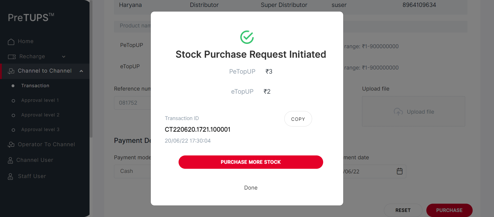
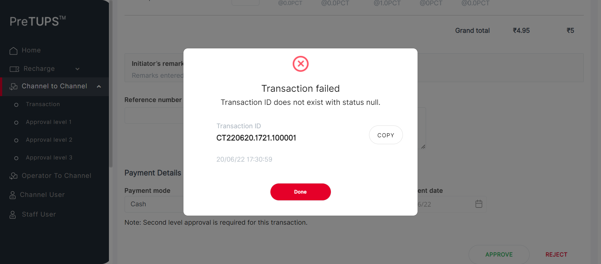
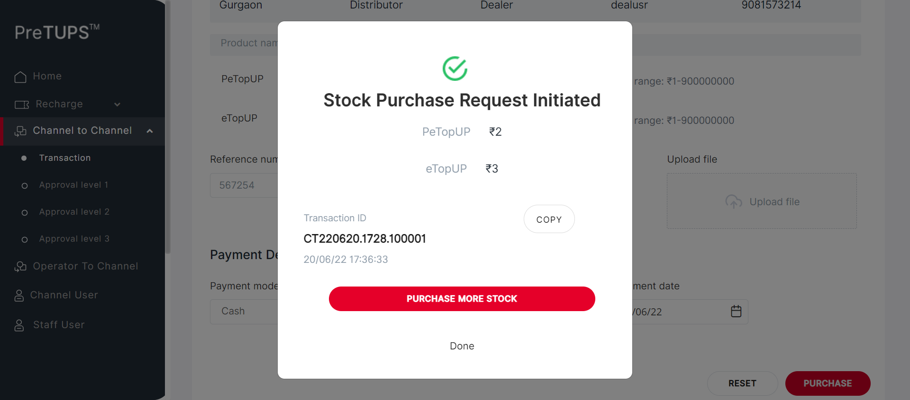
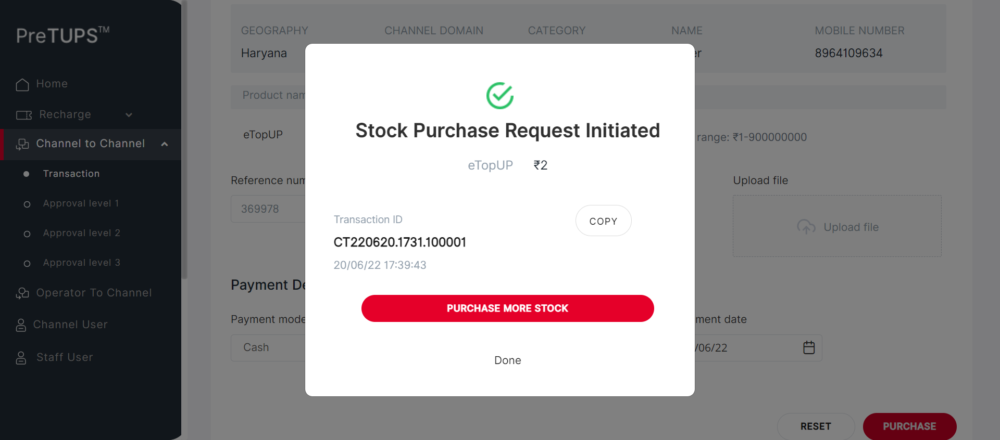
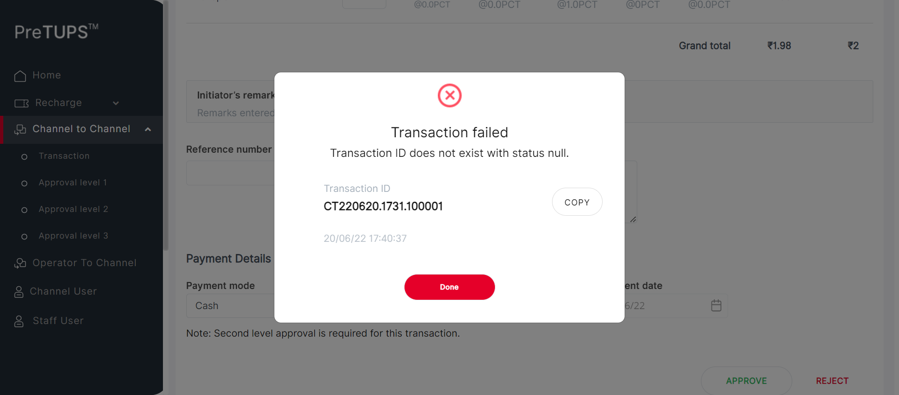
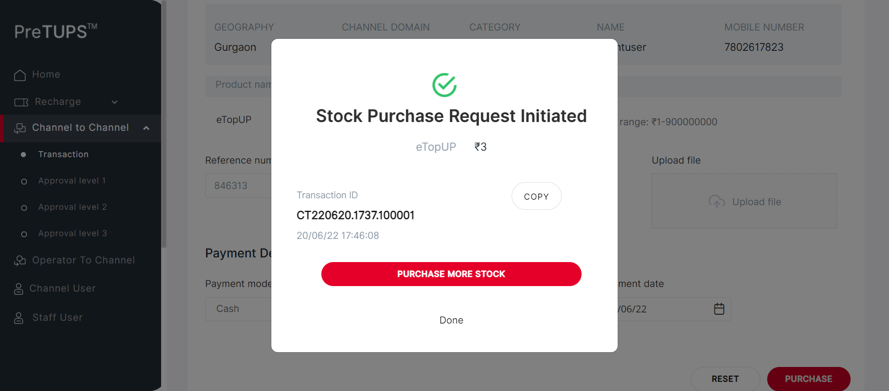

| Status | Timestamp | Details |
|---|---|---|
| info_outline | 5:29:01 PM | Entered getPreference(DIST, NG, MAX_APPROVAL_LEVEL_C2C_TRANSFER) |
| info_outline | 5:29:01 PM | Service Class Preference Not Found |
| info_outline | 5:29:01 PM | Trying to get Preference value from Control Preferences |
| info_outline | 5:29:01 PM | Query Repository Returns: DEFAULT_VALUE (3) |
| info_outline | 5:29:01 PM | Category Code for Dealer: SE |
| info_outline | 5:29:01 PM | Entered webInterface(Dealer) |
| info_outline | 5:29:01 PM | webInterface() :: select query: Select WEB_INTERFACE_ALLOWED from categories where category_name= ? |
| info_outline | 5:29:01 PM | Database Returns: WEB_INTERFACE_ALLOWED (Y) |
| info_outline | 5:29:01 PM | Exited webInterface() |
| info_outline | 5:29:01 PM | Entered performC2CBuyMobileBuyerType(Dealer, Super Distributor, 8964109634, 2468) |
| info_outline | 5:29:01 PM | Login ID Found as: newdealusrr |
| info_outline | 5:29:01 PM | Password Found as: Com@2468 |
| info_outline | 5:29:01 PM | LOGINID : newdealusrr |
| info_outline | 5:29:02 PM | LoginID found as: newdealusrr |
| info_outline | 5:29:02 PM | Password found as: Com@2468 |
| info_outline | 5:29:02 PM | Username found as: dealuser |
| info_outline | 5:29:03 PM | Trying to select Language |
| info_outline | 5:29:13 PM | Trying to enter Login ID |
| info_outline | 5:29:13 PM | Login ID entered successfully as: newdealusrr |
| info_outline | 5:29:13 PM | Trying to enter Password |
| info_outline | 5:29:14 PM | Password entered successfully as: Com@2468 |
| info_outline | 5:29:14 PM | Trying to click Login Button |
| info_outline | 5:29:14 PM | Login button clicked successfully |
| info_outline | 5:29:14 PM | Error Message Found on Login Screen: |
| info_outline | 5:29:26 PM | Trying clicking on C2C Heading |
| info_outline | 5:29:27 PM | User clicked C2C Heading Link. |
| info_outline | 5:29:27 PM | Trying clicking on C2C Transaction Heading |
| info_outline | 5:29:27 PM | User clicked C2C Transaction Heading Link. |
| info_outline | 5:29:27 PM | C2C Heading and Transaction Heading is clicked |
| info_outline | 5:29:27 PM | Trying clicking on C2C Single Operation Heading |
| info_outline | 5:29:31 PM | User clicked C2C Single Operation Heading. |
| info_outline | 5:29:31 PM | Trying clicking on C2C Buy Heading |
| info_outline | 5:29:31 PM | User clicked C2C Buy Heading. |
| info_outline | 5:29:31 PM | Trying clicking on Etopup |
| info_outline | 5:29:31 PM | Clicked Etopup. |
| info_outline | 5:29:31 PM | Trying to select C2C Buyer Type |
| info_outline | 5:29:31 PM | C2C Buyer Type selected : //ng-select[@id='searchBy']//ng-dropdown-panel[contains(@class,'ng-star-inserted')]//span[text()='Mobile Number'] |
| info_outline | 5:29:31 PM | Entering C2C MSISDN |
| info_outline | 5:29:31 PM | Entered C2C MSISDN : 8964109634 |
| info_outline | 5:29:41 PM | Trying clicking on PROCEED button on C2C |
| info_outline | 5:29:51 PM | Clicked PROCEED button on C2C. |
| info_outline | 5:29:51 PM | Trying to initiate C2C Topups |
| info_outline | 5:29:52 PM | rowCount of c2c topups available on screen : 2 |
| info_outline | 5:29:52 PM | sheetProductCode : eTopUP |
| info_outline | 5:29:52 PM | sheetProductCode : PeTopUP |
| info_outline | 5:29:52 PM | quantity : 3 |
| info_outline | 5:29:52 PM | String.valueOf(quantity) SEND KEYS : 3 |
| info_outline | 5:29:52 PM | rowCount of c2c topups available on screen : 2 |
| info_outline | 5:29:52 PM | sheetProductCode : eTopUP |
| info_outline | 5:29:52 PM | quantity : 2 |
| info_outline | 5:29:52 PM | String.valueOf(quantity) SEND KEYS : 2 |
| info_outline | 5:29:52 PM | sheetProductCode : PeTopUP |
| info_outline | 5:29:52 PM | Entered Quantities: |
| info_outline | 5:29:52 PM | Entered Reference Number |
| info_outline | 5:29:53 PM | User entered Remarks |
| info_outline | 5:29:53 PM | Trying to select Payment mode : Cash |
| info_outline | 5:29:53 PM | Selected Payment Mode : Cash |
| info_outline | 5:29:53 PM | Trying to select Payment Instrument Number |
| info_outline | 5:29:53 PM | User entered PaymentInstNum: 124231 |
| info_outline | 5:29:59 PM | Trying to select Date |
| info_outline | 5:29:59 PM | Trying to enter Payment Instrument Date |
| info_outline | 5:30:02 PM | User entered PaymentInstDate: 20/06/22 |
| info_outline | 5:30:02 PM | Trying clicking on C2C TRANSFER button |
| info_outline | 5:30:02 PM | Clicked C2C Transfer Button |
| info_outline | 5:30:04 PM | PIN PopUP is visible. |
| info_outline | 5:30:04 PM | Trying to Enter Channel User PIN for C2C |
| info_outline | 5:30:04 PM | User entered PIN: 2468 |
| info_outline | 5:30:04 PM | Trying clicking on C2C TRANSFER button |
| info_outline | 5:30:04 PM | Clicked C2C Transfer Button |
| info_outline | 5:30:06 PM | PIN PopUP is visible. |
| info_outline | 5:30:06 PM | Fetching C2C Buy Request Initiated Message |
| info_outline | 5:30:06 PM | C2C Transfer Buy Initiated Message : Stock Purchase Request Initiated |
| info_outline | 5:30:06 PM | Trying to get C2C Topups Done |
| info_outline | 5:30:06 PM | C2C [[ChromeDriver: chrome on WINDOWS (1bab47f7b41f2b3fdd7e0468923e6b5b)] -> xpath: (//label[@class='labelposPrd'])[1]] : [[ChromeDriver: chrome on WINDOWS (1bab47f7b41f2b3fdd7e0468923e6b5b)] -> xpath: (//label[@class='labelposPrd'])[1]/following-sibling::label] |
| info_outline | 5:30:06 PM | C2C [[ChromeDriver: chrome on WINDOWS (1bab47f7b41f2b3fdd7e0468923e6b5b)] -> xpath: (//label[@class='labelposPrd'])[2]] : [[ChromeDriver: chrome on WINDOWS (1bab47f7b41f2b3fdd7e0468923e6b5b)] -> xpath: (//label[@class='labelposPrd'])[2]/following-sibling::label] |
| info_outline | 5:30:06 PM | C2C TOPUPS Done and Info Printed Above |
| info_outline | 5:30:06 PM | C2C Purchase Initiated : Stock Purchase Request Initiated |
| info_outline | 5:30:11 PM | Fetching C2C Purchase Transaction ID |
| info_outline | 5:30:11 PM | C2C Purchase Transaction ID : CT220620.1721.100001 |
| error | 5:30:32 PM | Error while getting SSH Server Instance : com.jcraft.jsch.JSchException: java.net.ConnectException: Connection timed out: connect |
| check_circle | 5:30:32 PM | Catalina Log |
| info_outline | 5:30:33 PM |  |
| info_outline | 5:30:33 PM | Trying to Click DONE button after C2C Purchase initiated |
| info_outline | 5:30:33 PM | Clicked Done for Initiated C2C |
| info_outline | 5:30:33 PM | Exited performC2CBuyMobileBuyerType() |
| info_outline | 5:30:33 PM | Entered performC2CTransferMobileBuyerType(Super Distributor, Dealer, 2468) |
| info_outline | 5:30:33 PM | Login ID Found as: suser |
| info_outline | 5:30:33 PM | Password Found as: Com@2469 |
| info_outline | 5:30:33 PM | LOGINID : suser |
| info_outline | 5:30:33 PM | LoginID found as: suser |
| info_outline | 5:30:33 PM | Password found as: Com@2469 |
| info_outline | 5:30:33 PM | Username found as: suser |
| info_outline | 5:30:34 PM | Trying to select Language |
| info_outline | 5:30:44 PM | Trying to enter Login ID |
| info_outline | 5:30:44 PM | Login ID entered successfully as: suser |
| info_outline | 5:30:44 PM | Trying to enter Password |
| info_outline | 5:30:44 PM | Password entered successfully as: Com@2469 |
| info_outline | 5:30:44 PM | Trying to click Login Button |
| info_outline | 5:30:45 PM | Login button clicked successfully |
| info_outline | 5:30:45 PM | Error Message Found on Login Screen: |
| info_outline | 5:30:54 PM | Trying clicking on C2C Heading |
| info_outline | 5:30:54 PM | User clicked C2C Heading Link. |
| info_outline | 5:30:54 PM | Trying clicking on C2C Approval Level 1 Heading |
| info_outline | 5:30:54 PM | User clicked C2C Approval Level 1 Heading Link. |
| info_outline | 5:30:54 PM | C2C Heading and Transaction Heading is clicked |
| info_outline | 5:30:54 PM | Waiting for spinner |
| info_outline | 5:30:56 PM | Waiting for spinner to stop |
| info_outline | 5:30:57 PM | Spinner stopped |
| info_outline | 5:30:57 PM | Trying clicking on C2C Single Operation Heading |
| info_outline | 5:30:57 PM | User clicked C2C Single Operation Heading. |
| info_outline | 5:30:57 PM | Trying clicking on etopUp Heading |
| info_outline | 5:30:57 PM | User clicked eTopup Heading Link. |
| info_outline | 5:30:57 PM | Trying to enter the TransactionId |
| info_outline | 5:30:58 PM | Entered the TransactionId |
| info_outline | 5:30:58 PM | Trying to Click the approve button |
| info_outline | 5:30:58 PM | User clicked Approve Button . |
| info_outline | 5:30:58 PM | Trying to enter the remarks |
| info_outline | 5:30:58 PM | Entered the TransactionId |
| info_outline | 5:30:59 PM | Trying to Click the approve button |
| info_outline | 5:30:59 PM | User clicked Approve Button . |
| info_outline | 5:30:59 PM | Trying to Click the yes button |
| info_outline | 5:30:59 PM | User clicked Yes Button. |
| info_outline | 5:31:00 PM | PopUP is visible. |
| info_outline | 5:31:00 PM | Trying to get the Success Msg |
| info_outline | 5:31:01 PM | Successfully Retrieved Success Msg |
| info_outline | 5:31:01 PM | C2C Approval Displays wrong message as Transaction failed |
| error | 5:31:22 PM | Error while getting SSH Server Instance : com.jcraft.jsch.JSchException: java.net.ConnectException: Connection timed out: connect |
| cancel | 5:31:22 PM | Catalina Log |
| info_outline | 5:31:22 PM |  |
| info_outline | 5:31:22 PM | Entered performC2CTransferMobileBuyerType(Super Distributor, Dealer, 2468) |
| info_outline | 5:31:22 PM | Login ID Found as: suser |
| info_outline | 5:31:22 PM | Password Found as: Com@2469 |
| info_outline | 5:31:22 PM | LOGINID : suser |
| info_outline | 5:31:22 PM | LoginID found as: suser |
| info_outline | 5:31:22 PM | Password found as: Com@2469 |
| info_outline | 5:31:22 PM | Username found as: suser |
| info_outline | 5:31:22 PM | Trying to select Language |
| info_outline | 5:31:33 PM | Trying to enter Login ID |
| info_outline | 5:31:33 PM | Login ID entered successfully as: suser |
| info_outline | 5:31:33 PM | Trying to enter Password |
| info_outline | 5:31:33 PM | Password entered successfully as: Com@2469 |
| info_outline | 5:31:33 PM | Trying to click Login Button |
| info_outline | 5:31:33 PM | Login button clicked successfully |
| info_outline | 5:31:33 PM | Error Message Found on Login Screen: |
| info_outline | 5:31:43 PM | Trying clicking on C2C Heading |
| info_outline | 5:31:43 PM | User clicked C2C Heading Link. |
| info_outline | 5:31:43 PM | Trying clicking on C2C Approval Level 2 Heading |
| info_outline | 5:31:43 PM | User clicked C2C Approval Level 2 Heading Link. |
| info_outline | 5:31:43 PM | C2C Heading and Transaction Heading is clicked |
| info_outline | 5:31:43 PM | Waiting for spinner |
| info_outline | 5:31:43 PM | Waiting for spinner to stop |
| info_outline | 5:31:45 PM | Spinner stopped |
| info_outline | 5:31:45 PM | Trying clicking on C2C Single Operation Heading |
| info_outline | 5:31:45 PM | User clicked C2C Single Operation Heading. |
| info_outline | 5:31:45 PM | Trying clicking on etopUp Heading |
| info_outline | 5:31:45 PM | User clicked eTopup Heading Link. |
| info_outline | 5:31:45 PM | Trying to enter the TransactionId |
| cancel | 5:32:06 PM | org.openqa.selenium.TimeoutException: Expected condition failed: waiting for visibility of element located by By.xpath: //input[@aria-controls='parentTable'] (tried for 20 second(s) with 500 milliseconds interval) at org.openqa.selenium.support.ui.WebDriverWait.timeoutException(WebDriverWait.java:82) at org.openqa.selenium.support.ui.FluentWait.until(FluentWait.java:272) at angular.pageobjects.c2capproval.C2CApproval.enterTxnId(C2CApproval.java:92) at angular.feature.C2CBuyRevamp.performingLevel2Approval(C2CBuyRevamp.java:948) at angular.testscripts.prereuisitesangular.PreRequisite_C2CBuy_Revamp.A_01_Test_C2CBuyMobileBuyerType(PreRequisite_C2CBuy_Revamp.java:67) at sun.reflect.NativeMethodAccessorImpl.invoke0(Native Method) at sun.reflect.NativeMethodAccessorImpl.invoke(Unknown Source) at sun.reflect.DelegatingMethodAccessorImpl.invoke(Unknown Source) at java.lang.reflect.Method.invoke(Unknown Source) at org.testng.internal.MethodInvocationHelper.invokeMethod(MethodInvocationHelper.java:124) at org.testng.internal.Invoker.invokeMethod(Invoker.java:580) at org.testng.internal.Invoker.invokeTestMethod(Invoker.java:716) at org.testng.internal.Invoker.invokeTestMethods(Invoker.java:988) at org.testng.internal.TestMethodWorker.invokeTestMethods(TestMethodWorker.java:125) at org.testng.internal.TestMethodWorker.run(TestMethodWorker.java:109) at org.testng.TestRunner.privateRun(TestRunner.java:648) at org.testng.TestRunner.run(TestRunner.java:505) at org.testng.SuiteRunner.runTest(SuiteRunner.java:455) at org.testng.SuiteRunner.runSequentially(SuiteRunner.java:450) at org.testng.SuiteRunner.privateRun(SuiteRunner.java:415) at org.testng.SuiteRunner.run(SuiteRunner.java:364) at org.testng.SuiteRunnerWorker.runSuite(SuiteRunnerWorker.java:52) at org.testng.SuiteRunnerWorker.run(SuiteRunnerWorker.java:84) at org.testng.TestNG.runSuitesSequentially(TestNG.java:1208) at org.testng.TestNG.runSuitesLocally(TestNG.java:1137) at org.testng.TestNG.runSuites(TestNG.java:1049) at org.testng.TestNG.run(TestNG.java:1017) at org.testng.remote.AbstractRemoteTestNG.run(AbstractRemoteTestNG.java:115) at org.testng.remote.RemoteTestNG.initAndRun(RemoteTestNG.java:251) at org.testng.remote.RemoteTestNG.main(RemoteTestNG.java:77) Caused by: org.openqa.selenium.NoSuchElementException: Cannot locate an element using By.xpath: //input[@aria-controls='parentTable'] For documentation on this error, please visit: http://seleniumhq.org/exceptions/no_such_element.html Build info: version: '3.10.0', revision: '176b4a9', time: '2018-03-02T19:03:16.397Z' System info: host: 'MCKL-20005142', ip: '192.168.1.40', os.name: 'Windows 10', os.arch: 'amd64', os.version: '10.0', java.version: '1.8.0_291' Driver info: driver.version: unknown at org.openqa.selenium.support.ui.ExpectedConditions.lambda$findElement$0(ExpectedConditions.java:896) at java.util.Optional.orElseThrow(Unknown Source) at org.openqa.selenium.support.ui.ExpectedConditions.findElement(ExpectedConditions.java:895) at org.openqa.selenium.support.ui.ExpectedConditions.access$000(ExpectedConditions.java:44) at org.openqa.selenium.support.ui.ExpectedConditions$7.apply(ExpectedConditions.java:206) at org.openqa.selenium.support.ui.ExpectedConditions$7.apply(ExpectedConditions.java:202) at org.openqa.selenium.support.ui.FluentWait.until(FluentWait.java:249) ... 28 more |
| error | 5:32:27 PM | Error while getting SSH Server Instance : com.jcraft.jsch.JSchException: java.net.ConnectException: Connection timed out: connect |
| cancel | 5:32:27 PM | Catalina Log |
| Status | Timestamp | Details |
|---|---|---|
| info_outline | 5:32:27 PM | Entered getPreference(DIST, NG, MAX_APPROVAL_LEVEL_C2C_TRANSFER) |
| info_outline | 5:32:27 PM | Service Class Preference Not Found |
| info_outline | 5:32:27 PM | Trying to get Preference value from Control Preferences |
| info_outline | 5:32:27 PM | Query Repository Returns: DEFAULT_VALUE (3) |
| info_outline | 5:32:27 PM | Category Code for Agent: AG |
| info_outline | 5:32:27 PM | Entered webInterface(Agent) |
| info_outline | 5:32:27 PM | webInterface() :: select query: Select WEB_INTERFACE_ALLOWED from categories where category_name= ? |
| info_outline | 5:32:28 PM | Database Returns: WEB_INTERFACE_ALLOWED (Y) |
| info_outline | 5:32:28 PM | Exited webInterface() |
| info_outline | 5:32:28 PM | Entered performC2CBuyMobileBuyerType(Agent, Super Distributor, 8964109634, 2468) |
| info_outline | 5:32:28 PM | Login ID Found as: agusernew |
| info_outline | 5:32:28 PM | Password Found as: Com@2468 |
| info_outline | 5:32:28 PM | LOGINID : agusernew |
| info_outline | 5:32:28 PM | LoginID found as: agusernew |
| info_outline | 5:32:28 PM | Password found as: Com@2468 |
| info_outline | 5:32:28 PM | Username found as: agentuser |
| info_outline | 5:32:28 PM | Trying to select Language |
| info_outline | 5:32:38 PM | Trying to enter Login ID |
| info_outline | 5:32:39 PM | Login ID entered successfully as: agusernew |
| info_outline | 5:32:39 PM | Trying to enter Password |
| info_outline | 5:32:39 PM | Password entered successfully as: Com@2468 |
| info_outline | 5:32:39 PM | Trying to click Login Button |
| info_outline | 5:32:39 PM | Login button clicked successfully |
| info_outline | 5:32:39 PM | Error Message Found on Login Screen: |
| info_outline | 5:32:47 PM | Trying clicking on C2C Heading |
| info_outline | 5:32:47 PM | User clicked C2C Heading Link. |
| info_outline | 5:32:47 PM | Trying clicking on C2C Transaction Heading |
| info_outline | 5:32:47 PM | User clicked C2C Transaction Heading Link. |
| info_outline | 5:32:47 PM | C2C Heading and Transaction Heading is clicked |
| info_outline | 5:32:47 PM | Trying clicking on C2C Single Operation Heading |
| info_outline | 5:32:48 PM | User clicked C2C Single Operation Heading. |
| info_outline | 5:32:48 PM | Trying clicking on C2C Buy Heading |
| info_outline | 5:32:48 PM | User clicked C2C Buy Heading. |
| info_outline | 5:32:48 PM | Trying clicking on Etopup |
| info_outline | 5:32:48 PM | Clicked Etopup. |
| info_outline | 5:32:48 PM | Trying to select C2C Buyer Type |
| info_outline | 5:32:48 PM | C2C Buyer Type selected : //ng-select[@id='searchBy']//ng-dropdown-panel[contains(@class,'ng-star-inserted')]//span[text()='Mobile Number'] |
| info_outline | 5:32:48 PM | Entering C2C MSISDN |
| info_outline | 5:32:48 PM | Entered C2C MSISDN : 8964109634 |
| info_outline | 5:32:58 PM | Trying clicking on PROCEED button on C2C |
| info_outline | 5:33:08 PM | Clicked PROCEED button on C2C. |
| info_outline | 5:33:08 PM | Trying to initiate C2C Topups |
| info_outline | 5:33:09 PM | rowCount of c2c topups available on screen : 2 |
| info_outline | 5:33:09 PM | sheetProductCode : eTopUP |
| info_outline | 5:33:09 PM | sheetProductCode : PeTopUP |
| info_outline | 5:33:09 PM | quantity : 3 |
| info_outline | 5:33:09 PM | String.valueOf(quantity) SEND KEYS : 3 |
| info_outline | 5:33:09 PM | rowCount of c2c topups available on screen : 2 |
| info_outline | 5:33:09 PM | sheetProductCode : eTopUP |
| info_outline | 5:33:09 PM | quantity : 2 |
| info_outline | 5:33:09 PM | String.valueOf(quantity) SEND KEYS : 2 |
| info_outline | 5:33:09 PM | sheetProductCode : PeTopUP |
| info_outline | 5:33:09 PM | Entered Quantities: |
| info_outline | 5:33:09 PM | Entered Reference Number |
| info_outline | 5:33:10 PM | User entered Remarks |
| info_outline | 5:33:10 PM | Trying to select Payment mode : Cash |
| info_outline | 5:33:10 PM | Selected Payment Mode : Cash |
| info_outline | 5:33:10 PM | Trying to select Payment Instrument Number |
| info_outline | 5:33:10 PM | User entered PaymentInstNum: 124231 |
| info_outline | 5:33:15 PM | Trying to select Date |
| info_outline | 5:33:15 PM | Trying to enter Payment Instrument Date |
| info_outline | 5:33:19 PM | User entered PaymentInstDate: 20/06/22 |
| info_outline | 5:33:19 PM | Trying clicking on C2C TRANSFER button |
| info_outline | 5:33:19 PM | Clicked C2C Transfer Button |
| info_outline | 5:33:20 PM | PIN PopUP is visible. |
| info_outline | 5:33:20 PM | Trying to Enter Channel User PIN for C2C |
| info_outline | 5:33:20 PM | User entered PIN: 2468 |
| info_outline | 5:33:20 PM | Trying clicking on C2C TRANSFER button |
| info_outline | 5:33:20 PM | Clicked C2C Transfer Button |
| info_outline | 5:33:22 PM | PIN PopUP is visible. |
| info_outline | 5:33:22 PM | Fetching C2C Buy Request Initiated Message |
| info_outline | 5:33:22 PM | C2C Transfer Buy Initiated Message : Stock Purchase Request Initiated |
| info_outline | 5:33:22 PM | Trying to get C2C Topups Done |
| info_outline | 5:33:22 PM | C2C [[ChromeDriver: chrome on WINDOWS (1bab47f7b41f2b3fdd7e0468923e6b5b)] -> xpath: (//label[@class='labelposPrd'])[1]] : [[ChromeDriver: chrome on WINDOWS (1bab47f7b41f2b3fdd7e0468923e6b5b)] -> xpath: (//label[@class='labelposPrd'])[1]/following-sibling::label] |
| info_outline | 5:33:22 PM | C2C [[ChromeDriver: chrome on WINDOWS (1bab47f7b41f2b3fdd7e0468923e6b5b)] -> xpath: (//label[@class='labelposPrd'])[2]] : [[ChromeDriver: chrome on WINDOWS (1bab47f7b41f2b3fdd7e0468923e6b5b)] -> xpath: (//label[@class='labelposPrd'])[2]/following-sibling::label] |
| info_outline | 5:33:22 PM | C2C TOPUPS Done and Info Printed Above |
| info_outline | 5:33:22 PM | C2C Purchase Initiated : Stock Purchase Request Initiated |
| info_outline | 5:33:27 PM | Fetching C2C Purchase Transaction ID |
| info_outline | 5:33:27 PM | C2C Purchase Transaction ID : CT220620.1724.100001 |
| error | 5:33:48 PM | Error while getting SSH Server Instance : com.jcraft.jsch.JSchException: java.net.ConnectException: Connection timed out: connect |
| check_circle | 5:33:48 PM | Catalina Log |
| info_outline | 5:33:48 PM | |
| info_outline | 5:33:48 PM | Trying to Click DONE button after C2C Purchase initiated |
| info_outline | 5:33:49 PM | Clicked Done for Initiated C2C |
| info_outline | 5:33:49 PM | Exited performC2CBuyMobileBuyerType() |
| info_outline | 5:33:49 PM | Entered performC2CTransferMobileBuyerType(Super Distributor, Agent, 2468) |
| info_outline | 5:33:49 PM | Login ID Found as: suser |
| info_outline | 5:33:49 PM | Password Found as: Com@2469 |
| info_outline | 5:33:49 PM | LOGINID : suser |
| info_outline | 5:33:49 PM | LoginID found as: suser |
| info_outline | 5:33:49 PM | Password found as: Com@2469 |
| info_outline | 5:33:49 PM | Username found as: suser |
| info_outline | 5:33:49 PM | Trying to select Language |
| info_outline | 5:33:59 PM | Trying to enter Login ID |
| info_outline | 5:34:00 PM | Login ID entered successfully as: suser |
| info_outline | 5:34:00 PM | Trying to enter Password |
| info_outline | 5:34:00 PM | Password entered successfully as: Com@2469 |
| info_outline | 5:34:00 PM | Trying to click Login Button |
| info_outline | 5:34:00 PM | Login button clicked successfully |
| info_outline | 5:34:00 PM | Error Message Found on Login Screen: |
| info_outline | 5:34:09 PM | Trying clicking on C2C Heading |
| info_outline | 5:34:09 PM | User clicked C2C Heading Link. |
| info_outline | 5:34:09 PM | Trying clicking on C2C Approval Level 1 Heading |
| info_outline | 5:34:10 PM | User clicked C2C Approval Level 1 Heading Link. |
| info_outline | 5:34:10 PM | C2C Heading and Transaction Heading is clicked |
| info_outline | 5:34:10 PM | Waiting for spinner |
| info_outline | 5:34:10 PM | Waiting for spinner to stop |
| info_outline | 5:34:11 PM | Spinner stopped |
| info_outline | 5:34:11 PM | Trying clicking on C2C Single Operation Heading |
| info_outline | 5:34:11 PM | User clicked C2C Single Operation Heading. |
| info_outline | 5:34:11 PM | Trying clicking on etopUp Heading |
| info_outline | 5:34:12 PM | User clicked eTopup Heading Link. |
| info_outline | 5:34:12 PM | Trying to enter the TransactionId |
| info_outline | 5:34:12 PM | Entered the TransactionId |
| info_outline | 5:34:12 PM | Trying to Click the approve button |
| info_outline | 5:34:12 PM | User clicked Approve Button . |
| info_outline | 5:34:12 PM | Trying to enter the remarks |
| info_outline | 5:34:12 PM | Entered the TransactionId |
| info_outline | 5:34:13 PM | Trying to Click the approve button |
| info_outline | 5:34:13 PM | User clicked Approve Button . |
| info_outline | 5:34:13 PM | Trying to Click the yes button |
| info_outline | 5:34:14 PM | User clicked Yes Button. |
| info_outline | 5:34:14 PM | PopUP is visible. |
| info_outline | 5:34:14 PM | Trying to get the Success Msg |
| info_outline | 5:34:14 PM | Successfully Retrieved Success Msg |
| info_outline | 5:34:14 PM | C2C Approval Displays wrong message as Transaction failed |
| error | 5:34:35 PM | Error while getting SSH Server Instance : com.jcraft.jsch.JSchException: java.net.ConnectException: Connection timed out: connect |
| cancel | 5:34:35 PM | Catalina Log |
| info_outline | 5:34:36 PM | |
| info_outline | 5:34:36 PM | Entered performC2CTransferMobileBuyerType(Super Distributor, Agent, 2468) |
| info_outline | 5:34:36 PM | Login ID Found as: suser |
| info_outline | 5:34:36 PM | Password Found as: Com@2469 |
| info_outline | 5:34:36 PM | LOGINID : suser |
| info_outline | 5:34:36 PM | LoginID found as: suser |
| info_outline | 5:34:36 PM | Password found as: Com@2469 |
| info_outline | 5:34:36 PM | Username found as: suser |
| info_outline | 5:34:36 PM | Trying to select Language |
| info_outline | 5:34:47 PM | Trying to enter Login ID |
| info_outline | 5:34:47 PM | Login ID entered successfully as: suser |
| info_outline | 5:34:47 PM | Trying to enter Password |
| info_outline | 5:34:47 PM | Password entered successfully as: Com@2469 |
| info_outline | 5:34:47 PM | Trying to click Login Button |
| info_outline | 5:34:48 PM | Login button clicked successfully |
| info_outline | 5:34:48 PM | Error Message Found on Login Screen: |
| info_outline | 5:34:56 PM | Trying clicking on C2C Heading |
| info_outline | 5:34:56 PM | User clicked C2C Heading Link. |
| info_outline | 5:34:56 PM | Trying clicking on C2C Approval Level 2 Heading |
| info_outline | 5:34:57 PM | User clicked C2C Approval Level 2 Heading Link. |
| info_outline | 5:34:57 PM | C2C Heading and Transaction Heading is clicked |
| info_outline | 5:34:57 PM | Waiting for spinner |
| info_outline | 5:34:57 PM | Waiting for spinner to stop |
| info_outline | 5:34:58 PM | Spinner stopped |
| info_outline | 5:34:58 PM | Trying clicking on C2C Single Operation Heading |
| info_outline | 5:34:58 PM | User clicked C2C Single Operation Heading. |
| info_outline | 5:34:58 PM | Trying clicking on etopUp Heading |
| info_outline | 5:34:58 PM | User clicked eTopup Heading Link. |
| info_outline | 5:34:58 PM | Trying to enter the TransactionId |
| cancel | 5:35:18 PM | org.openqa.selenium.TimeoutException: Expected condition failed: waiting for visibility of element located by By.xpath: //input[@aria-controls='parentTable'] (tried for 20 second(s) with 500 milliseconds interval) at org.openqa.selenium.support.ui.WebDriverWait.timeoutException(WebDriverWait.java:82) at org.openqa.selenium.support.ui.FluentWait.until(FluentWait.java:272) at angular.pageobjects.c2capproval.C2CApproval.enterTxnId(C2CApproval.java:92) at angular.feature.C2CBuyRevamp.performingLevel2Approval(C2CBuyRevamp.java:948) at angular.testscripts.prereuisitesangular.PreRequisite_C2CBuy_Revamp.A_01_Test_C2CBuyMobileBuyerType(PreRequisite_C2CBuy_Revamp.java:67) at sun.reflect.NativeMethodAccessorImpl.invoke0(Native Method) at sun.reflect.NativeMethodAccessorImpl.invoke(Unknown Source) at sun.reflect.DelegatingMethodAccessorImpl.invoke(Unknown Source) at java.lang.reflect.Method.invoke(Unknown Source) at org.testng.internal.MethodInvocationHelper.invokeMethod(MethodInvocationHelper.java:124) at org.testng.internal.Invoker.invokeMethod(Invoker.java:580) at org.testng.internal.Invoker.invokeTestMethod(Invoker.java:716) at org.testng.internal.Invoker.invokeTestMethods(Invoker.java:988) at org.testng.internal.TestMethodWorker.invokeTestMethods(TestMethodWorker.java:125) at org.testng.internal.TestMethodWorker.run(TestMethodWorker.java:109) at org.testng.TestRunner.privateRun(TestRunner.java:648) at org.testng.TestRunner.run(TestRunner.java:505) at org.testng.SuiteRunner.runTest(SuiteRunner.java:455) at org.testng.SuiteRunner.runSequentially(SuiteRunner.java:450) at org.testng.SuiteRunner.privateRun(SuiteRunner.java:415) at org.testng.SuiteRunner.run(SuiteRunner.java:364) at org.testng.SuiteRunnerWorker.runSuite(SuiteRunnerWorker.java:52) at org.testng.SuiteRunnerWorker.run(SuiteRunnerWorker.java:84) at org.testng.TestNG.runSuitesSequentially(TestNG.java:1208) at org.testng.TestNG.runSuitesLocally(TestNG.java:1137) at org.testng.TestNG.runSuites(TestNG.java:1049) at org.testng.TestNG.run(TestNG.java:1017) at org.testng.remote.AbstractRemoteTestNG.run(AbstractRemoteTestNG.java:115) at org.testng.remote.RemoteTestNG.initAndRun(RemoteTestNG.java:251) at org.testng.remote.RemoteTestNG.main(RemoteTestNG.java:77) Caused by: org.openqa.selenium.NoSuchElementException: Cannot locate an element using By.xpath: //input[@aria-controls='parentTable'] For documentation on this error, please visit: http://seleniumhq.org/exceptions/no_such_element.html Build info: version: '3.10.0', revision: '176b4a9', time: '2018-03-02T19:03:16.397Z' System info: host: 'MCKL-20005142', ip: '192.168.1.40', os.name: 'Windows 10', os.arch: 'amd64', os.version: '10.0', java.version: '1.8.0_291' Driver info: driver.version: unknown at org.openqa.selenium.support.ui.ExpectedConditions.lambda$findElement$0(ExpectedConditions.java:896) at java.util.Optional.orElseThrow(Unknown Source) at org.openqa.selenium.support.ui.ExpectedConditions.findElement(ExpectedConditions.java:895) at org.openqa.selenium.support.ui.ExpectedConditions.access$000(ExpectedConditions.java:44) at org.openqa.selenium.support.ui.ExpectedConditions$7.apply(ExpectedConditions.java:206) at org.openqa.selenium.support.ui.ExpectedConditions$7.apply(ExpectedConditions.java:202) at org.openqa.selenium.support.ui.FluentWait.until(FluentWait.java:249) ... 28 more |
| error | 5:35:39 PM | Error while getting SSH Server Instance : com.jcraft.jsch.JSchException: java.net.ConnectException: Connection timed out: connect |
| cancel | 5:35:39 PM | Catalina Log |
| Status | Timestamp | Details |
|---|---|---|
| info_outline | 5:35:40 PM | Entered getPreference(SE, NG, MAX_APPROVAL_LEVEL_C2C_TRANSFER) |
| info_outline | 5:35:40 PM | Service Class Preference Not Found |
| info_outline | 5:35:40 PM | Trying to get Preference value from Control Preferences |
| info_outline | 5:35:40 PM | Query Repository Returns: DEFAULT_VALUE (3) |
| info_outline | 5:35:40 PM | Category Code for Agent: AG |
| info_outline | 5:35:40 PM | Entered webInterface(Agent) |
| info_outline | 5:35:40 PM | webInterface() :: select query: Select WEB_INTERFACE_ALLOWED from categories where category_name= ? |
| info_outline | 5:35:40 PM | Database Returns: WEB_INTERFACE_ALLOWED (Y) |
| info_outline | 5:35:40 PM | Exited webInterface() |
| info_outline | 5:35:40 PM | Entered performC2CBuyMobileBuyerType(Agent, Dealer, 9081573214, 2468) |
| info_outline | 5:35:41 PM | Login ID Found as: agusernew |
| info_outline | 5:35:41 PM | Password Found as: Com@2468 |
| info_outline | 5:35:41 PM | LOGINID : agusernew |
| info_outline | 5:35:41 PM | LoginID found as: agusernew |
| info_outline | 5:35:41 PM | Password found as: Com@2468 |
| info_outline | 5:35:41 PM | Username found as: agentuser |
| info_outline | 5:35:41 PM | Trying to select Language |
| info_outline | 5:35:51 PM | Trying to enter Login ID |
| info_outline | 5:35:52 PM | Login ID entered successfully as: agusernew |
| info_outline | 5:35:52 PM | Trying to enter Password |
| info_outline | 5:35:52 PM | Password entered successfully as: Com@2468 |
| info_outline | 5:35:52 PM | Trying to click Login Button |
| info_outline | 5:35:52 PM | Login button clicked successfully |
| info_outline | 5:35:52 PM | Error Message Found on Login Screen: |
| info_outline | 5:36:00 PM | Trying clicking on C2C Heading |
| info_outline | 5:36:00 PM | User clicked C2C Heading Link. |
| info_outline | 5:36:00 PM | Trying clicking on C2C Transaction Heading |
| info_outline | 5:36:01 PM | User clicked C2C Transaction Heading Link. |
| info_outline | 5:36:01 PM | C2C Heading and Transaction Heading is clicked |
| info_outline | 5:36:01 PM | Trying clicking on C2C Single Operation Heading |
| info_outline | 5:36:01 PM | User clicked C2C Single Operation Heading. |
| info_outline | 5:36:01 PM | Trying clicking on C2C Buy Heading |
| info_outline | 5:36:01 PM | User clicked C2C Buy Heading. |
| info_outline | 5:36:01 PM | Trying clicking on Etopup |
| info_outline | 5:36:01 PM | Clicked Etopup. |
| info_outline | 5:36:01 PM | Trying to select C2C Buyer Type |
| info_outline | 5:36:01 PM | C2C Buyer Type selected : //ng-select[@id='searchBy']//ng-dropdown-panel[contains(@class,'ng-star-inserted')]//span[text()='Mobile Number'] |
| info_outline | 5:36:01 PM | Entering C2C MSISDN |
| info_outline | 5:36:02 PM | Entered C2C MSISDN : 9081573214 |
| info_outline | 5:36:12 PM | Trying clicking on PROCEED button on C2C |
| info_outline | 5:36:22 PM | Clicked PROCEED button on C2C. |
| info_outline | 5:36:22 PM | Trying to initiate C2C Topups |
| info_outline | 5:36:22 PM | rowCount of c2c topups available on screen : 2 |
| info_outline | 5:36:22 PM | sheetProductCode : eTopUP |
| info_outline | 5:36:22 PM | sheetProductCode : PeTopUP |
| info_outline | 5:36:22 PM | quantity : 2 |
| info_outline | 5:36:22 PM | String.valueOf(quantity) SEND KEYS : 2 |
| info_outline | 5:36:22 PM | rowCount of c2c topups available on screen : 2 |
| info_outline | 5:36:22 PM | sheetProductCode : eTopUP |
| info_outline | 5:36:23 PM | quantity : 3 |
| info_outline | 5:36:23 PM | String.valueOf(quantity) SEND KEYS : 3 |
| info_outline | 5:36:23 PM | sheetProductCode : PeTopUP |
| info_outline | 5:36:23 PM | Entered Quantities: |
| info_outline | 5:36:23 PM | Entered Reference Number |
| info_outline | 5:36:23 PM | User entered Remarks |
| info_outline | 5:36:23 PM | Trying to select Payment mode : Cash |
| info_outline | 5:36:23 PM | Selected Payment Mode : Cash |
| info_outline | 5:36:23 PM | Trying to select Payment Instrument Number |
| info_outline | 5:36:24 PM | User entered PaymentInstNum: 124231 |
| info_outline | 5:36:29 PM | Trying to select Date |
| info_outline | 5:36:29 PM | Trying to enter Payment Instrument Date |
| info_outline | 5:36:32 PM | User entered PaymentInstDate: 20/06/22 |
| info_outline | 5:36:32 PM | Trying clicking on C2C TRANSFER button |
| info_outline | 5:36:32 PM | Clicked C2C Transfer Button |
| info_outline | 5:36:33 PM | PIN PopUP is visible. |
| info_outline | 5:36:33 PM | Trying to Enter Channel User PIN for C2C |
| info_outline | 5:36:33 PM | User entered PIN: 2468 |
| info_outline | 5:36:33 PM | Trying clicking on C2C TRANSFER button |
| info_outline | 5:36:33 PM | Clicked C2C Transfer Button |
| info_outline | 5:36:34 PM | PIN PopUP is visible. |
| info_outline | 5:36:34 PM | Fetching C2C Buy Request Initiated Message |
| info_outline | 5:36:35 PM | C2C Transfer Buy Initiated Message : Stock Purchase Request Initiated |
| info_outline | 5:36:35 PM | Trying to get C2C Topups Done |
| info_outline | 5:36:35 PM | C2C [[ChromeDriver: chrome on WINDOWS (1bab47f7b41f2b3fdd7e0468923e6b5b)] -> xpath: (//label[@class='labelposPrd'])[1]] : [[ChromeDriver: chrome on WINDOWS (1bab47f7b41f2b3fdd7e0468923e6b5b)] -> xpath: (//label[@class='labelposPrd'])[1]/following-sibling::label] |
| info_outline | 5:36:35 PM | C2C [[ChromeDriver: chrome on WINDOWS (1bab47f7b41f2b3fdd7e0468923e6b5b)] -> xpath: (//label[@class='labelposPrd'])[2]] : [[ChromeDriver: chrome on WINDOWS (1bab47f7b41f2b3fdd7e0468923e6b5b)] -> xpath: (//label[@class='labelposPrd'])[2]/following-sibling::label] |
| info_outline | 5:36:35 PM | C2C TOPUPS Done and Info Printed Above |
| info_outline | 5:36:35 PM | C2C Purchase Initiated : Stock Purchase Request Initiated |
| info_outline | 5:36:40 PM | Fetching C2C Purchase Transaction ID |
| info_outline | 5:36:40 PM | C2C Purchase Transaction ID : CT220620.1728.100001 |
| error | 5:37:01 PM | Error while getting SSH Server Instance : com.jcraft.jsch.JSchException: java.net.ConnectException: Connection timed out: connect |
| check_circle | 5:37:01 PM | Catalina Log |
| info_outline | 5:37:01 PM |  |
| info_outline | 5:37:01 PM | Trying to Click DONE button after C2C Purchase initiated |
| info_outline | 5:37:01 PM | Clicked Done for Initiated C2C |
| info_outline | 5:37:01 PM | Exited performC2CBuyMobileBuyerType() |
| info_outline | 5:37:01 PM | Entered performC2CTransferMobileBuyerType(Dealer, Agent, 2468) |
| info_outline | 5:37:01 PM | Login ID Found as: newdealusrr |
| info_outline | 5:37:01 PM | Password Found as: Com@2468 |
| info_outline | 5:37:01 PM | LOGINID : newdealusrr |
| info_outline | 5:37:01 PM | LoginID found as: newdealusrr |
| info_outline | 5:37:01 PM | Password found as: Com@2468 |
| info_outline | 5:37:02 PM | Username found as: dealuser |
| info_outline | 5:37:02 PM | Trying to select Language |
| info_outline | 5:37:12 PM | Trying to enter Login ID |
| info_outline | 5:37:12 PM | Login ID entered successfully as: newdealusrr |
| info_outline | 5:37:12 PM | Trying to enter Password |
| info_outline | 5:37:13 PM | Password entered successfully as: Com@2468 |
| info_outline | 5:37:13 PM | Trying to click Login Button |
| info_outline | 5:37:13 PM | Login button clicked successfully |
| info_outline | 5:37:13 PM | Error Message Found on Login Screen: |
| info_outline | 5:37:21 PM | Trying clicking on C2C Heading |
| info_outline | 5:37:21 PM | User clicked C2C Heading Link. |
| info_outline | 5:37:21 PM | Trying clicking on C2C Approval Level 1 Heading |
| info_outline | 5:37:21 PM | User clicked C2C Approval Level 1 Heading Link. |
| info_outline | 5:37:21 PM | C2C Heading and Transaction Heading is clicked |
| info_outline | 5:37:21 PM | Waiting for spinner |
| info_outline | 5:37:21 PM | Waiting for spinner to stop |
| info_outline | 5:37:22 PM | Spinner stopped |
| info_outline | 5:37:22 PM | Trying clicking on C2C Single Operation Heading |
| info_outline | 5:37:22 PM | User clicked C2C Single Operation Heading. |
| info_outline | 5:37:22 PM | Trying clicking on etopUp Heading |
| info_outline | 5:37:22 PM | User clicked eTopup Heading Link. |
| info_outline | 5:37:22 PM | Trying to enter the TransactionId |
| info_outline | 5:37:23 PM | Entered the TransactionId |
| info_outline | 5:37:23 PM | Trying to Click the approve button |
| info_outline | 5:37:23 PM | User clicked Approve Button . |
| info_outline | 5:37:23 PM | Trying to enter the remarks |
| info_outline | 5:37:23 PM | Entered the TransactionId |
| info_outline | 5:37:24 PM | Trying to Click the approve button |
| info_outline | 5:37:24 PM | User clicked Approve Button . |
| info_outline | 5:37:24 PM | Trying to Click the yes button |
| info_outline | 5:37:24 PM | User clicked Yes Button. |
| info_outline | 5:37:25 PM | PopUP is visible. |
| info_outline | 5:37:25 PM | Trying to get the Success Msg |
| info_outline | 5:37:25 PM | Successfully Retrieved Success Msg |
| info_outline | 5:37:25 PM | C2C Approval Displays wrong message as Transaction failed |
| error | 5:37:46 PM | Error while getting SSH Server Instance : com.jcraft.jsch.JSchException: java.net.ConnectException: Connection timed out: connect |
| cancel | 5:37:46 PM | Catalina Log |
| info_outline | 5:37:46 PM | |
| info_outline | 5:37:46 PM | Entered performC2CTransferMobileBuyerType(Dealer, Agent, 2468) |
| info_outline | 5:37:46 PM | Login ID Found as: newdealusrr |
| info_outline | 5:37:46 PM | Password Found as: Com@2468 |
| info_outline | 5:37:46 PM | LOGINID : newdealusrr |
| info_outline | 5:37:47 PM | LoginID found as: newdealusrr |
| info_outline | 5:37:47 PM | Password found as: Com@2468 |
| info_outline | 5:37:47 PM | Username found as: dealuser |
| info_outline | 5:37:47 PM | Trying to select Language |
| info_outline | 5:37:57 PM | Trying to enter Login ID |
| info_outline | 5:37:58 PM | Login ID entered successfully as: newdealusrr |
| info_outline | 5:37:58 PM | Trying to enter Password |
| info_outline | 5:37:58 PM | Password entered successfully as: Com@2468 |
| info_outline | 5:37:58 PM | Trying to click Login Button |
| info_outline | 5:37:58 PM | Login button clicked successfully |
| info_outline | 5:37:58 PM | Error Message Found on Login Screen: |
| info_outline | 5:38:06 PM | Trying clicking on C2C Heading |
| info_outline | 5:38:06 PM | User clicked C2C Heading Link. |
| info_outline | 5:38:06 PM | Trying clicking on C2C Approval Level 2 Heading |
| info_outline | 5:38:06 PM | User clicked C2C Approval Level 2 Heading Link. |
| info_outline | 5:38:06 PM | C2C Heading and Transaction Heading is clicked |
| info_outline | 5:38:06 PM | Waiting for spinner |
| info_outline | 5:38:06 PM | Waiting for spinner to stop |
| info_outline | 5:38:08 PM | Spinner stopped |
| info_outline | 5:38:08 PM | Trying clicking on C2C Single Operation Heading |
| info_outline | 5:38:08 PM | User clicked C2C Single Operation Heading. |
| info_outline | 5:38:08 PM | Trying clicking on etopUp Heading |
| info_outline | 5:38:09 PM | User clicked eTopup Heading Link. |
| info_outline | 5:38:09 PM | Trying to enter the TransactionId |
| cancel | 5:38:29 PM | org.openqa.selenium.TimeoutException: Expected condition failed: waiting for visibility of element located by By.xpath: //input[@aria-controls='parentTable'] (tried for 20 second(s) with 500 milliseconds interval) at org.openqa.selenium.support.ui.WebDriverWait.timeoutException(WebDriverWait.java:82) at org.openqa.selenium.support.ui.FluentWait.until(FluentWait.java:272) at angular.pageobjects.c2capproval.C2CApproval.enterTxnId(C2CApproval.java:92) at angular.feature.C2CBuyRevamp.performingLevel2Approval(C2CBuyRevamp.java:948) at angular.testscripts.prereuisitesangular.PreRequisite_C2CBuy_Revamp.A_01_Test_C2CBuyMobileBuyerType(PreRequisite_C2CBuy_Revamp.java:67) at sun.reflect.NativeMethodAccessorImpl.invoke0(Native Method) at sun.reflect.NativeMethodAccessorImpl.invoke(Unknown Source) at sun.reflect.DelegatingMethodAccessorImpl.invoke(Unknown Source) at java.lang.reflect.Method.invoke(Unknown Source) at org.testng.internal.MethodInvocationHelper.invokeMethod(MethodInvocationHelper.java:124) at org.testng.internal.Invoker.invokeMethod(Invoker.java:580) at org.testng.internal.Invoker.invokeTestMethod(Invoker.java:716) at org.testng.internal.Invoker.invokeTestMethods(Invoker.java:988) at org.testng.internal.TestMethodWorker.invokeTestMethods(TestMethodWorker.java:125) at org.testng.internal.TestMethodWorker.run(TestMethodWorker.java:109) at org.testng.TestRunner.privateRun(TestRunner.java:648) at org.testng.TestRunner.run(TestRunner.java:505) at org.testng.SuiteRunner.runTest(SuiteRunner.java:455) at org.testng.SuiteRunner.runSequentially(SuiteRunner.java:450) at org.testng.SuiteRunner.privateRun(SuiteRunner.java:415) at org.testng.SuiteRunner.run(SuiteRunner.java:364) at org.testng.SuiteRunnerWorker.runSuite(SuiteRunnerWorker.java:52) at org.testng.SuiteRunnerWorker.run(SuiteRunnerWorker.java:84) at org.testng.TestNG.runSuitesSequentially(TestNG.java:1208) at org.testng.TestNG.runSuitesLocally(TestNG.java:1137) at org.testng.TestNG.runSuites(TestNG.java:1049) at org.testng.TestNG.run(TestNG.java:1017) at org.testng.remote.AbstractRemoteTestNG.run(AbstractRemoteTestNG.java:115) at org.testng.remote.RemoteTestNG.initAndRun(RemoteTestNG.java:251) at org.testng.remote.RemoteTestNG.main(RemoteTestNG.java:77) Caused by: org.openqa.selenium.NoSuchElementException: Cannot locate an element using By.xpath: //input[@aria-controls='parentTable'] For documentation on this error, please visit: http://seleniumhq.org/exceptions/no_such_element.html Build info: version: '3.10.0', revision: '176b4a9', time: '2018-03-02T19:03:16.397Z' System info: host: 'MCKL-20005142', ip: '192.168.1.40', os.name: 'Windows 10', os.arch: 'amd64', os.version: '10.0', java.version: '1.8.0_291' Driver info: driver.version: unknown at org.openqa.selenium.support.ui.ExpectedConditions.lambda$findElement$0(ExpectedConditions.java:896) at java.util.Optional.orElseThrow(Unknown Source) at org.openqa.selenium.support.ui.ExpectedConditions.findElement(ExpectedConditions.java:895) at org.openqa.selenium.support.ui.ExpectedConditions.access$000(ExpectedConditions.java:44) at org.openqa.selenium.support.ui.ExpectedConditions$7.apply(ExpectedConditions.java:206) at org.openqa.selenium.support.ui.ExpectedConditions$7.apply(ExpectedConditions.java:202) at org.openqa.selenium.support.ui.FluentWait.until(FluentWait.java:249) ... 28 more |
| error | 5:38:50 PM | Error while getting SSH Server Instance : com.jcraft.jsch.JSchException: java.net.ConnectException: Connection timed out: connect |
| cancel | 5:38:50 PM | Catalina Log |
| Status | Timestamp | Details |
|---|---|---|
| info_outline | 5:38:50 PM | Entered getPreference(DIST, NG, MAX_APPROVAL_LEVEL_C2C_TRANSFER) |
| info_outline | 5:38:50 PM | Service Class Preference Not Found |
| info_outline | 5:38:50 PM | Trying to get Preference value from Control Preferences |
| info_outline | 5:38:50 PM | Query Repository Returns: DEFAULT_VALUE (3) |
| info_outline | 5:38:50 PM | Category Code for Retailer: RET |
| info_outline | 5:38:51 PM | Entered webInterface(Retailer) |
| info_outline | 5:38:51 PM | webInterface() :: select query: Select WEB_INTERFACE_ALLOWED from categories where category_name= ? |
| info_outline | 5:38:51 PM | Database Returns: WEB_INTERFACE_ALLOWED (Y) |
| info_outline | 5:38:51 PM | Exited webInterface() |
| info_outline | 5:38:51 PM | Entered performC2CBuyMobileBuyerType(Retailer, Super Distributor, 8964109634, 2468) |
| info_outline | 5:38:51 PM | Login ID Found as: sourabhretailer |
| info_outline | 5:38:51 PM | Password Found as: Com@2468 |
| info_outline | 5:38:51 PM | LOGINID : sourabhretailer |
| info_outline | 5:38:51 PM | LoginID found as: sourabhretailer |
| info_outline | 5:38:51 PM | Password found as: Com@2468 |
| info_outline | 5:38:51 PM | Username found as: userretnew |
| info_outline | 5:38:52 PM | Trying to select Language |
| info_outline | 5:39:02 PM | Trying to enter Login ID |
| info_outline | 5:39:02 PM | Login ID entered successfully as: sourabhretailer |
| info_outline | 5:39:02 PM | Trying to enter Password |
| info_outline | 5:39:03 PM | Password entered successfully as: Com@2468 |
| info_outline | 5:39:03 PM | Trying to click Login Button |
| info_outline | 5:39:03 PM | Login button clicked successfully |
| info_outline | 5:39:03 PM | Error Message Found on Login Screen: |
| info_outline | 5:39:11 PM | Trying clicking on C2C Heading |
| info_outline | 5:39:11 PM | User clicked C2C Heading Link. |
| info_outline | 5:39:11 PM | Trying clicking on C2C Transaction Heading |
| info_outline | 5:39:11 PM | User clicked C2C Transaction Heading Link. |
| info_outline | 5:39:11 PM | C2C Heading and Transaction Heading is clicked |
| info_outline | 5:39:11 PM | Trying clicking on C2C Single Operation Heading |
| info_outline | 5:39:11 PM | User clicked C2C Single Operation Heading. |
| info_outline | 5:39:11 PM | Trying clicking on C2C Buy Heading |
| info_outline | 5:39:12 PM | User clicked C2C Buy Heading. |
| info_outline | 5:39:12 PM | Trying clicking on Etopup |
| info_outline | 5:39:12 PM | Clicked Etopup. |
| info_outline | 5:39:12 PM | Trying to select C2C Buyer Type |
| info_outline | 5:39:12 PM | C2C Buyer Type selected : //ng-select[@id='searchBy']//ng-dropdown-panel[contains(@class,'ng-star-inserted')]//span[text()='Mobile Number'] |
| info_outline | 5:39:12 PM | Entering C2C MSISDN |
| info_outline | 5:39:12 PM | Entered C2C MSISDN : 8964109634 |
| info_outline | 5:39:22 PM | Trying clicking on PROCEED button on C2C |
| info_outline | 5:39:32 PM | Clicked PROCEED button on C2C. |
| info_outline | 5:39:32 PM | Trying to initiate C2C Topups |
| info_outline | 5:39:32 PM | rowCount of c2c topups available on screen : 2 |
| info_outline | 5:39:32 PM | sheetProductCode : eTopUP |
| info_outline | 5:39:32 PM | quantity : 2 |
| info_outline | 5:39:32 PM | String.valueOf(quantity) SEND KEYS : 2 |
| info_outline | 5:39:32 PM | sheetProductCode : PeTopUP |
| info_outline | 5:39:33 PM | Entered Quantities: |
| info_outline | 5:39:33 PM | Entered Reference Number |
| info_outline | 5:39:33 PM | User entered Remarks |
| info_outline | 5:39:33 PM | Trying to select Payment mode : Cash |
| info_outline | 5:39:33 PM | Selected Payment Mode : Cash |
| info_outline | 5:39:33 PM | Trying to select Payment Instrument Number |
| info_outline | 5:39:33 PM | User entered PaymentInstNum: 124231 |
| info_outline | 5:39:38 PM | Trying to select Date |
| info_outline | 5:39:38 PM | Trying to enter Payment Instrument Date |
| info_outline | 5:39:42 PM | User entered PaymentInstDate: 20/06/22 |
| info_outline | 5:39:42 PM | Trying clicking on C2C TRANSFER button |
| info_outline | 5:39:42 PM | Clicked C2C Transfer Button |
| info_outline | 5:39:43 PM | PIN PopUP is visible. |
| info_outline | 5:39:43 PM | Trying to Enter Channel User PIN for C2C |
| info_outline | 5:39:43 PM | User entered PIN: 2468 |
| info_outline | 5:39:43 PM | Trying clicking on C2C TRANSFER button |
| info_outline | 5:39:43 PM | Clicked C2C Transfer Button |
| info_outline | 5:39:44 PM | PIN PopUP is visible. |
| info_outline | 5:39:44 PM | Fetching C2C Buy Request Initiated Message |
| info_outline | 5:39:45 PM | C2C Transfer Buy Initiated Message : Stock Purchase Request Initiated |
| info_outline | 5:39:45 PM | Trying to get C2C Topups Done |
| info_outline | 5:39:45 PM | C2C [[ChromeDriver: chrome on WINDOWS (1bab47f7b41f2b3fdd7e0468923e6b5b)] -> xpath: (//label[@class='labelposPrd'])[1]] : [[ChromeDriver: chrome on WINDOWS (1bab47f7b41f2b3fdd7e0468923e6b5b)] -> xpath: (//label[@class='labelposPrd'])[1]/following-sibling::label] |
| info_outline | 5:39:45 PM | C2C TOPUPS Done and Info Printed Above |
| info_outline | 5:39:45 PM | C2C Purchase Initiated : Stock Purchase Request Initiated |
| info_outline | 5:39:50 PM | Fetching C2C Purchase Transaction ID |
| info_outline | 5:39:50 PM | C2C Purchase Transaction ID : CT220620.1731.100001 |
| error | 5:40:11 PM | Error while getting SSH Server Instance : com.jcraft.jsch.JSchException: java.net.ConnectException: Connection timed out: connect |
| check_circle | 5:40:11 PM | Catalina Log |
| info_outline | 5:40:11 PM |  |
| info_outline | 5:40:11 PM | Trying to Click DONE button after C2C Purchase initiated |
| info_outline | 5:40:11 PM | Clicked Done for Initiated C2C |
| info_outline | 5:40:11 PM | Exited performC2CBuyMobileBuyerType() |
| info_outline | 5:40:11 PM | Entered performC2CTransferMobileBuyerType(Super Distributor, Retailer, 2468) |
| info_outline | 5:40:11 PM | Login ID Found as: suser |
| info_outline | 5:40:11 PM | Password Found as: Com@2469 |
| info_outline | 5:40:11 PM | LOGINID : suser |
| info_outline | 5:40:11 PM | LoginID found as: suser |
| info_outline | 5:40:11 PM | Password found as: Com@2469 |
| info_outline | 5:40:11 PM | Username found as: suser |
| info_outline | 5:40:12 PM | Trying to select Language |
| info_outline | 5:40:22 PM | Trying to enter Login ID |
| info_outline | 5:40:23 PM | Login ID entered successfully as: suser |
| info_outline | 5:40:23 PM | Trying to enter Password |
| info_outline | 5:40:23 PM | Password entered successfully as: Com@2469 |
| info_outline | 5:40:23 PM | Trying to click Login Button |
| info_outline | 5:40:23 PM | Login button clicked successfully |
| info_outline | 5:40:23 PM | Error Message Found on Login Screen: |
| info_outline | 5:40:32 PM | Trying clicking on C2C Heading |
| info_outline | 5:40:32 PM | User clicked C2C Heading Link. |
| info_outline | 5:40:32 PM | Trying clicking on C2C Approval Level 1 Heading |
| info_outline | 5:40:33 PM | User clicked C2C Approval Level 1 Heading Link. |
| info_outline | 5:40:33 PM | C2C Heading and Transaction Heading is clicked |
| info_outline | 5:40:33 PM | Waiting for spinner |
| info_outline | 5:40:33 PM | Waiting for spinner to stop |
| info_outline | 5:40:34 PM | Spinner stopped |
| info_outline | 5:40:34 PM | Trying clicking on C2C Single Operation Heading |
| info_outline | 5:40:34 PM | User clicked C2C Single Operation Heading. |
| info_outline | 5:40:34 PM | Trying clicking on etopUp Heading |
| info_outline | 5:40:35 PM | User clicked eTopup Heading Link. |
| info_outline | 5:40:35 PM | Trying to enter the TransactionId |
| info_outline | 5:40:35 PM | Entered the TransactionId |
| info_outline | 5:40:35 PM | Trying to Click the approve button |
| info_outline | 5:40:35 PM | User clicked Approve Button . |
| info_outline | 5:40:35 PM | Trying to enter the remarks |
| info_outline | 5:40:35 PM | Entered the TransactionId |
| info_outline | 5:40:36 PM | Trying to Click the approve button |
| info_outline | 5:40:36 PM | User clicked Approve Button . |
| info_outline | 5:40:36 PM | Trying to Click the yes button |
| info_outline | 5:40:37 PM | User clicked Yes Button. |
| info_outline | 5:40:37 PM | PopUP is visible. |
| info_outline | 5:40:37 PM | Trying to get the Success Msg |
| info_outline | 5:40:37 PM | Successfully Retrieved Success Msg |
| info_outline | 5:40:37 PM | C2C Approval Displays wrong message as Transaction failed |
| error | 5:40:58 PM | Error while getting SSH Server Instance : com.jcraft.jsch.JSchException: java.net.ConnectException: Connection timed out: connect |
| cancel | 5:40:58 PM | Catalina Log |
| info_outline | 5:40:59 PM |  |
| info_outline | 5:40:59 PM | Entered performC2CTransferMobileBuyerType(Super Distributor, Retailer, 2468) |
| info_outline | 5:40:59 PM | Login ID Found as: suser |
| info_outline | 5:40:59 PM | Password Found as: Com@2469 |
| info_outline | 5:40:59 PM | LOGINID : suser |
| info_outline | 5:40:59 PM | LoginID found as: suser |
| info_outline | 5:40:59 PM | Password found as: Com@2469 |
| info_outline | 5:40:59 PM | Username found as: suser |
| info_outline | 5:40:59 PM | Trying to select Language |
| info_outline | 5:41:09 PM | Trying to enter Login ID |
| info_outline | 5:41:10 PM | Login ID entered successfully as: suser |
| info_outline | 5:41:10 PM | Trying to enter Password |
| info_outline | 5:41:10 PM | Password entered successfully as: Com@2469 |
| info_outline | 5:41:10 PM | Trying to click Login Button |
| info_outline | 5:41:10 PM | Login button clicked successfully |
| info_outline | 5:41:10 PM | Error Message Found on Login Screen: |
| info_outline | 5:41:19 PM | Trying clicking on C2C Heading |
| info_outline | 5:41:19 PM | User clicked C2C Heading Link. |
| info_outline | 5:41:19 PM | Trying clicking on C2C Approval Level 2 Heading |
| info_outline | 5:41:20 PM | User clicked C2C Approval Level 2 Heading Link. |
| info_outline | 5:41:20 PM | C2C Heading and Transaction Heading is clicked |
| info_outline | 5:41:20 PM | Waiting for spinner |
| info_outline | 5:41:20 PM | Waiting for spinner to stop |
| info_outline | 5:41:21 PM | Spinner stopped |
| info_outline | 5:41:21 PM | Trying clicking on C2C Single Operation Heading |
| info_outline | 5:41:21 PM | User clicked C2C Single Operation Heading. |
| info_outline | 5:41:21 PM | Trying clicking on etopUp Heading |
| info_outline | 5:41:21 PM | User clicked eTopup Heading Link. |
| info_outline | 5:41:22 PM | Trying to enter the TransactionId |
| cancel | 5:41:42 PM | org.openqa.selenium.TimeoutException: Expected condition failed: waiting for visibility of element located by By.xpath: //input[@aria-controls='parentTable'] (tried for 20 second(s) with 500 milliseconds interval) at org.openqa.selenium.support.ui.WebDriverWait.timeoutException(WebDriverWait.java:82) at org.openqa.selenium.support.ui.FluentWait.until(FluentWait.java:272) at angular.pageobjects.c2capproval.C2CApproval.enterTxnId(C2CApproval.java:92) at angular.feature.C2CBuyRevamp.performingLevel2Approval(C2CBuyRevamp.java:948) at angular.testscripts.prereuisitesangular.PreRequisite_C2CBuy_Revamp.A_01_Test_C2CBuyMobileBuyerType(PreRequisite_C2CBuy_Revamp.java:67) at sun.reflect.NativeMethodAccessorImpl.invoke0(Native Method) at sun.reflect.NativeMethodAccessorImpl.invoke(Unknown Source) at sun.reflect.DelegatingMethodAccessorImpl.invoke(Unknown Source) at java.lang.reflect.Method.invoke(Unknown Source) at org.testng.internal.MethodInvocationHelper.invokeMethod(MethodInvocationHelper.java:124) at org.testng.internal.Invoker.invokeMethod(Invoker.java:580) at org.testng.internal.Invoker.invokeTestMethod(Invoker.java:716) at org.testng.internal.Invoker.invokeTestMethods(Invoker.java:988) at org.testng.internal.TestMethodWorker.invokeTestMethods(TestMethodWorker.java:125) at org.testng.internal.TestMethodWorker.run(TestMethodWorker.java:109) at org.testng.TestRunner.privateRun(TestRunner.java:648) at org.testng.TestRunner.run(TestRunner.java:505) at org.testng.SuiteRunner.runTest(SuiteRunner.java:455) at org.testng.SuiteRunner.runSequentially(SuiteRunner.java:450) at org.testng.SuiteRunner.privateRun(SuiteRunner.java:415) at org.testng.SuiteRunner.run(SuiteRunner.java:364) at org.testng.SuiteRunnerWorker.runSuite(SuiteRunnerWorker.java:52) at org.testng.SuiteRunnerWorker.run(SuiteRunnerWorker.java:84) at org.testng.TestNG.runSuitesSequentially(TestNG.java:1208) at org.testng.TestNG.runSuitesLocally(TestNG.java:1137) at org.testng.TestNG.runSuites(TestNG.java:1049) at org.testng.TestNG.run(TestNG.java:1017) at org.testng.remote.AbstractRemoteTestNG.run(AbstractRemoteTestNG.java:115) at org.testng.remote.RemoteTestNG.initAndRun(RemoteTestNG.java:251) at org.testng.remote.RemoteTestNG.main(RemoteTestNG.java:77) Caused by: org.openqa.selenium.NoSuchElementException: Cannot locate an element using By.xpath: //input[@aria-controls='parentTable'] For documentation on this error, please visit: http://seleniumhq.org/exceptions/no_such_element.html Build info: version: '3.10.0', revision: '176b4a9', time: '2018-03-02T19:03:16.397Z' System info: host: 'MCKL-20005142', ip: '192.168.1.40', os.name: 'Windows 10', os.arch: 'amd64', os.version: '10.0', java.version: '1.8.0_291' Driver info: driver.version: unknown at org.openqa.selenium.support.ui.ExpectedConditions.lambda$findElement$0(ExpectedConditions.java:896) at java.util.Optional.orElseThrow(Unknown Source) at org.openqa.selenium.support.ui.ExpectedConditions.findElement(ExpectedConditions.java:895) at org.openqa.selenium.support.ui.ExpectedConditions.access$000(ExpectedConditions.java:44) at org.openqa.selenium.support.ui.ExpectedConditions$7.apply(ExpectedConditions.java:206) at org.openqa.selenium.support.ui.ExpectedConditions$7.apply(ExpectedConditions.java:202) at org.openqa.selenium.support.ui.FluentWait.until(FluentWait.java:249) ... 28 more |
| error | 5:42:03 PM | Error while getting SSH Server Instance : com.jcraft.jsch.JSchException: java.net.ConnectException: Connection timed out: connect |
| cancel | 5:42:03 PM | Catalina Log |
| Status | Timestamp | Details |
|---|---|---|
| info_outline | 5:42:03 PM | Entered getPreference(SE, NG, MAX_APPROVAL_LEVEL_C2C_TRANSFER) |
| info_outline | 5:42:03 PM | Service Class Preference Not Found |
| info_outline | 5:42:03 PM | Trying to get Preference value from Control Preferences |
| info_outline | 5:42:03 PM | Query Repository Returns: DEFAULT_VALUE (3) |
| info_outline | 5:42:04 PM | Category Code for Retailer: RET |
| info_outline | 5:42:04 PM | Entered webInterface(Retailer) |
| info_outline | 5:42:04 PM | webInterface() :: select query: Select WEB_INTERFACE_ALLOWED from categories where category_name= ? |
| info_outline | 5:42:04 PM | Database Returns: WEB_INTERFACE_ALLOWED (Y) |
| info_outline | 5:42:04 PM | Exited webInterface() |
| info_outline | 5:42:04 PM | Entered performC2CBuyMobileBuyerType(Retailer, Dealer, 9081573214, 2468) |
| info_outline | 5:42:04 PM | Login ID Found as: sourabhretailer |
| info_outline | 5:42:04 PM | Password Found as: Com@2468 |
| info_outline | 5:42:04 PM | LOGINID : sourabhretailer |
| info_outline | 5:42:04 PM | LoginID found as: sourabhretailer |
| info_outline | 5:42:04 PM | Password found as: Com@2468 |
| info_outline | 5:42:04 PM | Username found as: userretnew |
| info_outline | 5:42:04 PM | Trying to select Language |
| info_outline | 5:42:15 PM | Trying to enter Login ID |
| info_outline | 5:42:15 PM | Login ID entered successfully as: sourabhretailer |
| info_outline | 5:42:15 PM | Trying to enter Password |
| info_outline | 5:42:15 PM | Password entered successfully as: Com@2468 |
| info_outline | 5:42:15 PM | Trying to click Login Button |
| info_outline | 5:42:15 PM | Login button clicked successfully |
| info_outline | 5:42:15 PM | Error Message Found on Login Screen: |
| info_outline | 5:42:23 PM | Trying clicking on C2C Heading |
| info_outline | 5:42:24 PM | User clicked C2C Heading Link. |
| info_outline | 5:42:24 PM | Trying clicking on C2C Transaction Heading |
| info_outline | 5:42:24 PM | User clicked C2C Transaction Heading Link. |
| info_outline | 5:42:24 PM | C2C Heading and Transaction Heading is clicked |
| info_outline | 5:42:24 PM | Trying clicking on C2C Single Operation Heading |
| info_outline | 5:42:24 PM | User clicked C2C Single Operation Heading. |
| info_outline | 5:42:24 PM | Trying clicking on C2C Buy Heading |
| info_outline | 5:42:24 PM | User clicked C2C Buy Heading. |
| info_outline | 5:42:24 PM | Trying clicking on Etopup |
| info_outline | 5:42:24 PM | Clicked Etopup. |
| info_outline | 5:42:24 PM | Trying to select C2C Buyer Type |
| info_outline | 5:42:24 PM | C2C Buyer Type selected : //ng-select[@id='searchBy']//ng-dropdown-panel[contains(@class,'ng-star-inserted')]//span[text()='Mobile Number'] |
| info_outline | 5:42:24 PM | Entering C2C MSISDN |
| info_outline | 5:42:25 PM | Entered C2C MSISDN : 9081573214 |
| info_outline | 5:42:35 PM | Trying clicking on PROCEED button on C2C |
| info_outline | 5:42:45 PM | Clicked PROCEED button on C2C. |
| info_outline | 5:42:45 PM | Trying to initiate C2C Topups |
| info_outline | 5:42:45 PM | rowCount of c2c topups available on screen : 2 |
| info_outline | 5:42:45 PM | sheetProductCode : eTopUP |
| info_outline | 5:42:45 PM | quantity : 3 |
| info_outline | 5:42:45 PM | String.valueOf(quantity) SEND KEYS : 3 |
| info_outline | 5:42:45 PM | sheetProductCode : PeTopUP |
| info_outline | 5:42:45 PM | Entered Quantities: |
| info_outline | 5:42:45 PM | Entered Reference Number |
| info_outline | 5:42:46 PM | User entered Remarks |
| info_outline | 5:42:46 PM | Trying to select Payment mode : Cash |
| info_outline | 5:42:46 PM | Selected Payment Mode : Cash |
| info_outline | 5:42:46 PM | Trying to select Payment Instrument Number |
| info_outline | 5:42:47 PM | User entered PaymentInstNum: 124231 |
| info_outline | 5:42:52 PM | Trying to select Date |
| info_outline | 5:42:52 PM | Trying to enter Payment Instrument Date |
| info_outline | 5:42:55 PM | User entered PaymentInstDate: 20/06/22 |
| info_outline | 5:42:55 PM | Trying clicking on C2C TRANSFER button |
| info_outline | 5:42:55 PM | Clicked C2C Transfer Button |
| info_outline | 5:42:56 PM | PIN PopUP is visible. |
| info_outline | 5:42:56 PM | Trying to Enter Channel User PIN for C2C |
| info_outline | 5:42:56 PM | User entered PIN: 2468 |
| info_outline | 5:42:56 PM | Trying clicking on C2C TRANSFER button |
| info_outline | 5:42:56 PM | Clicked C2C Transfer Button |
| info_outline | 5:42:57 PM | PIN PopUP is visible. |
| info_outline | 5:42:57 PM | Fetching C2C Buy Request Initiated Message |
| info_outline | 5:42:57 PM | C2C Transfer Buy Initiated Message : Stock Purchase Request Initiated |
| info_outline | 5:42:57 PM | Trying to get C2C Topups Done |
| info_outline | 5:42:57 PM | C2C [[ChromeDriver: chrome on WINDOWS (1bab47f7b41f2b3fdd7e0468923e6b5b)] -> xpath: (//label[@class='labelposPrd'])[1]] : [[ChromeDriver: chrome on WINDOWS (1bab47f7b41f2b3fdd7e0468923e6b5b)] -> xpath: (//label[@class='labelposPrd'])[1]/following-sibling::label] |
| info_outline | 5:42:57 PM | C2C TOPUPS Done and Info Printed Above |
| info_outline | 5:42:57 PM | C2C Purchase Initiated : Stock Purchase Request Initiated |
| info_outline | 5:43:02 PM | Fetching C2C Purchase Transaction ID |
| info_outline | 5:43:02 PM | C2C Purchase Transaction ID : CT220620.1734.100001 |
| error | 5:43:23 PM | Error while getting SSH Server Instance : com.jcraft.jsch.JSchException: java.net.ConnectException: Connection timed out: connect |
| check_circle | 5:43:23 PM | Catalina Log |
| info_outline | 5:43:24 PM | |
| info_outline | 5:43:24 PM | Trying to Click DONE button after C2C Purchase initiated |
| info_outline | 5:43:24 PM | Clicked Done for Initiated C2C |
| info_outline | 5:43:24 PM | Exited performC2CBuyMobileBuyerType() |
| info_outline | 5:43:24 PM | Entered performC2CTransferMobileBuyerType(Dealer, Retailer, 2468) |
| info_outline | 5:43:24 PM | Login ID Found as: newdealusrr |
| info_outline | 5:43:24 PM | Password Found as: Com@2468 |
| info_outline | 5:43:24 PM | LOGINID : newdealusrr |
| info_outline | 5:43:24 PM | LoginID found as: newdealusrr |
| info_outline | 5:43:24 PM | Password found as: Com@2468 |
| info_outline | 5:43:24 PM | Username found as: dealuser |
| info_outline | 5:43:25 PM | Trying to select Language |
| info_outline | 5:43:35 PM | Trying to enter Login ID |
| info_outline | 5:43:36 PM | Login ID entered successfully as: newdealusrr |
| info_outline | 5:43:36 PM | Trying to enter Password |
| info_outline | 5:43:36 PM | Password entered successfully as: Com@2468 |
| info_outline | 5:43:36 PM | Trying to click Login Button |
| info_outline | 5:43:36 PM | Login button clicked successfully |
| info_outline | 5:43:36 PM | Error Message Found on Login Screen: |
| info_outline | 5:43:44 PM | Trying clicking on C2C Heading |
| info_outline | 5:43:44 PM | User clicked C2C Heading Link. |
| info_outline | 5:43:44 PM | Trying clicking on C2C Approval Level 1 Heading |
| info_outline | 5:43:44 PM | User clicked C2C Approval Level 1 Heading Link. |
| info_outline | 5:43:44 PM | C2C Heading and Transaction Heading is clicked |
| info_outline | 5:43:44 PM | Waiting for spinner |
| info_outline | 5:43:45 PM | Waiting for spinner to stop |
| info_outline | 5:43:46 PM | Spinner stopped |
| info_outline | 5:43:46 PM | Trying clicking on C2C Single Operation Heading |
| info_outline | 5:43:46 PM | User clicked C2C Single Operation Heading. |
| info_outline | 5:43:46 PM | Trying clicking on etopUp Heading |
| info_outline | 5:43:46 PM | User clicked eTopup Heading Link. |
| info_outline | 5:43:46 PM | Trying to enter the TransactionId |
| info_outline | 5:43:46 PM | Entered the TransactionId |
| info_outline | 5:43:46 PM | Trying to Click the approve button |
| info_outline | 5:43:46 PM | User clicked Approve Button . |
| info_outline | 5:43:46 PM | Trying to enter the remarks |
| info_outline | 5:43:47 PM | Entered the TransactionId |
| info_outline | 5:43:48 PM | Trying to Click the approve button |
| info_outline | 5:43:48 PM | User clicked Approve Button . |
| info_outline | 5:43:48 PM | Trying to Click the yes button |
| info_outline | 5:43:48 PM | User clicked Yes Button. |
| info_outline | 5:43:48 PM | PopUP is visible. |
| info_outline | 5:43:48 PM | Trying to get the Success Msg |
| info_outline | 5:43:48 PM | Successfully Retrieved Success Msg |
| info_outline | 5:43:48 PM | C2C Approval Displays wrong message as Transaction failed |
| error | 5:44:09 PM | Error while getting SSH Server Instance : com.jcraft.jsch.JSchException: java.net.ConnectException: Connection timed out: connect |
| cancel | 5:44:09 PM | Catalina Log |
| info_outline | 5:44:10 PM | |
| info_outline | 5:44:10 PM | Entered performC2CTransferMobileBuyerType(Dealer, Retailer, 2468) |
| info_outline | 5:44:10 PM | Login ID Found as: newdealusrr |
| info_outline | 5:44:10 PM | Password Found as: Com@2468 |
| info_outline | 5:44:10 PM | LOGINID : newdealusrr |
| info_outline | 5:44:10 PM | LoginID found as: newdealusrr |
| info_outline | 5:44:10 PM | Password found as: Com@2468 |
| info_outline | 5:44:10 PM | Username found as: dealuser |
| info_outline | 5:44:10 PM | Trying to select Language |
| info_outline | 5:44:20 PM | Trying to enter Login ID |
| info_outline | 5:44:21 PM | Login ID entered successfully as: newdealusrr |
| info_outline | 5:44:21 PM | Trying to enter Password |
| info_outline | 5:44:21 PM | Password entered successfully as: Com@2468 |
| info_outline | 5:44:21 PM | Trying to click Login Button |
| info_outline | 5:44:21 PM | Login button clicked successfully |
| info_outline | 5:44:21 PM | Error Message Found on Login Screen: |
| info_outline | 5:44:29 PM | Trying clicking on C2C Heading |
| info_outline | 5:44:29 PM | User clicked C2C Heading Link. |
| info_outline | 5:44:29 PM | Trying clicking on C2C Approval Level 2 Heading |
| info_outline | 5:44:30 PM | User clicked C2C Approval Level 2 Heading Link. |
| info_outline | 5:44:30 PM | C2C Heading and Transaction Heading is clicked |
| info_outline | 5:44:30 PM | Waiting for spinner |
| info_outline | 5:44:30 PM | Waiting for spinner to stop |
| info_outline | 5:44:31 PM | Spinner stopped |
| info_outline | 5:44:31 PM | Trying clicking on C2C Single Operation Heading |
| info_outline | 5:44:31 PM | User clicked C2C Single Operation Heading. |
| info_outline | 5:44:31 PM | Trying clicking on etopUp Heading |
| info_outline | 5:44:31 PM | User clicked eTopup Heading Link. |
| info_outline | 5:44:31 PM | Trying to enter the TransactionId |
| cancel | 5:44:51 PM | org.openqa.selenium.TimeoutException: Expected condition failed: waiting for visibility of element located by By.xpath: //input[@aria-controls='parentTable'] (tried for 20 second(s) with 500 milliseconds interval) at org.openqa.selenium.support.ui.WebDriverWait.timeoutException(WebDriverWait.java:82) at org.openqa.selenium.support.ui.FluentWait.until(FluentWait.java:272) at angular.pageobjects.c2capproval.C2CApproval.enterTxnId(C2CApproval.java:92) at angular.feature.C2CBuyRevamp.performingLevel2Approval(C2CBuyRevamp.java:948) at angular.testscripts.prereuisitesangular.PreRequisite_C2CBuy_Revamp.A_01_Test_C2CBuyMobileBuyerType(PreRequisite_C2CBuy_Revamp.java:67) at sun.reflect.NativeMethodAccessorImpl.invoke0(Native Method) at sun.reflect.NativeMethodAccessorImpl.invoke(Unknown Source) at sun.reflect.DelegatingMethodAccessorImpl.invoke(Unknown Source) at java.lang.reflect.Method.invoke(Unknown Source) at org.testng.internal.MethodInvocationHelper.invokeMethod(MethodInvocationHelper.java:124) at org.testng.internal.Invoker.invokeMethod(Invoker.java:580) at org.testng.internal.Invoker.invokeTestMethod(Invoker.java:716) at org.testng.internal.Invoker.invokeTestMethods(Invoker.java:988) at org.testng.internal.TestMethodWorker.invokeTestMethods(TestMethodWorker.java:125) at org.testng.internal.TestMethodWorker.run(TestMethodWorker.java:109) at org.testng.TestRunner.privateRun(TestRunner.java:648) at org.testng.TestRunner.run(TestRunner.java:505) at org.testng.SuiteRunner.runTest(SuiteRunner.java:455) at org.testng.SuiteRunner.runSequentially(SuiteRunner.java:450) at org.testng.SuiteRunner.privateRun(SuiteRunner.java:415) at org.testng.SuiteRunner.run(SuiteRunner.java:364) at org.testng.SuiteRunnerWorker.runSuite(SuiteRunnerWorker.java:52) at org.testng.SuiteRunnerWorker.run(SuiteRunnerWorker.java:84) at org.testng.TestNG.runSuitesSequentially(TestNG.java:1208) at org.testng.TestNG.runSuitesLocally(TestNG.java:1137) at org.testng.TestNG.runSuites(TestNG.java:1049) at org.testng.TestNG.run(TestNG.java:1017) at org.testng.remote.AbstractRemoteTestNG.run(AbstractRemoteTestNG.java:115) at org.testng.remote.RemoteTestNG.initAndRun(RemoteTestNG.java:251) at org.testng.remote.RemoteTestNG.main(RemoteTestNG.java:77) Caused by: org.openqa.selenium.NoSuchElementException: Cannot locate an element using By.xpath: //input[@aria-controls='parentTable'] For documentation on this error, please visit: http://seleniumhq.org/exceptions/no_such_element.html Build info: version: '3.10.0', revision: '176b4a9', time: '2018-03-02T19:03:16.397Z' System info: host: 'MCKL-20005142', ip: '192.168.1.40', os.name: 'Windows 10', os.arch: 'amd64', os.version: '10.0', java.version: '1.8.0_291' Driver info: driver.version: unknown at org.openqa.selenium.support.ui.ExpectedConditions.lambda$findElement$0(ExpectedConditions.java:896) at java.util.Optional.orElseThrow(Unknown Source) at org.openqa.selenium.support.ui.ExpectedConditions.findElement(ExpectedConditions.java:895) at org.openqa.selenium.support.ui.ExpectedConditions.access$000(ExpectedConditions.java:44) at org.openqa.selenium.support.ui.ExpectedConditions$7.apply(ExpectedConditions.java:206) at org.openqa.selenium.support.ui.ExpectedConditions$7.apply(ExpectedConditions.java:202) at org.openqa.selenium.support.ui.FluentWait.until(FluentWait.java:249) ... 28 more |
| error | 5:45:12 PM | Error while getting SSH Server Instance : com.jcraft.jsch.JSchException: java.net.ConnectException: Connection timed out: connect |
| cancel | 5:45:12 PM | Catalina Log |
| Status | Timestamp | Details |
|---|---|---|
| info_outline | 5:45:13 PM | Entered getPreference(AG, NG, MAX_APPROVAL_LEVEL_C2C_TRANSFER) |
| info_outline | 5:45:14 PM | Service Class Preference Not Found |
| info_outline | 5:45:14 PM | Trying to get Preference value from Control Preferences |
| info_outline | 5:45:15 PM | Query Repository Returns: DEFAULT_VALUE (0) |
| info_outline | 5:45:15 PM | Category Code for Retailer: RET |
| info_outline | 5:45:15 PM | Entered webInterface(Retailer) |
| info_outline | 5:45:15 PM | webInterface() :: select query: Select WEB_INTERFACE_ALLOWED from categories where category_name= ? |
| info_outline | 5:45:16 PM | Database Returns: WEB_INTERFACE_ALLOWED (Y) |
| info_outline | 5:45:16 PM | Exited webInterface() |
| info_outline | 5:45:16 PM | Entered performC2CBuyMobileBuyerType(Retailer, Agent, 7802617823, 2468) |
| info_outline | 5:45:16 PM | Login ID Found as: sourabhretailer |
| info_outline | 5:45:16 PM | Password Found as: Com@2468 |
| info_outline | 5:45:16 PM | LOGINID : sourabhretailer |
| info_outline | 5:45:16 PM | LoginID found as: sourabhretailer |
| info_outline | 5:45:16 PM | Password found as: Com@2468 |
| info_outline | 5:45:16 PM | Username found as: userretnew |
| info_outline | 5:45:17 PM | Trying to select Language |
| info_outline | 5:45:27 PM | Trying to enter Login ID |
| info_outline | 5:45:28 PM | Login ID entered successfully as: sourabhretailer |
| info_outline | 5:45:28 PM | Trying to enter Password |
| info_outline | 5:45:28 PM | Password entered successfully as: Com@2468 |
| info_outline | 5:45:28 PM | Trying to click Login Button |
| info_outline | 5:45:28 PM | Login button clicked successfully |
| info_outline | 5:45:28 PM | Error Message Found on Login Screen: |
| info_outline | 5:45:36 PM | Trying clicking on C2C Heading |
| info_outline | 5:45:36 PM | User clicked C2C Heading Link. |
| info_outline | 5:45:36 PM | Trying clicking on C2C Transaction Heading |
| info_outline | 5:45:36 PM | User clicked C2C Transaction Heading Link. |
| info_outline | 5:45:36 PM | C2C Heading and Transaction Heading is clicked |
| info_outline | 5:45:36 PM | Trying clicking on C2C Single Operation Heading |
| info_outline | 5:45:36 PM | User clicked C2C Single Operation Heading. |
| info_outline | 5:45:36 PM | Trying clicking on C2C Buy Heading |
| info_outline | 5:45:36 PM | User clicked C2C Buy Heading. |
| info_outline | 5:45:36 PM | Trying clicking on Etopup |
| info_outline | 5:45:36 PM | Clicked Etopup. |
| info_outline | 5:45:36 PM | Trying to select C2C Buyer Type |
| info_outline | 5:45:37 PM | C2C Buyer Type selected : //ng-select[@id='searchBy']//ng-dropdown-panel[contains(@class,'ng-star-inserted')]//span[text()='Mobile Number'] |
| info_outline | 5:45:37 PM | Entering C2C MSISDN |
| info_outline | 5:45:37 PM | Entered C2C MSISDN : 7802617823 |
| info_outline | 5:45:47 PM | Trying clicking on PROCEED button on C2C |
| info_outline | 5:45:57 PM | Clicked PROCEED button on C2C. |
| info_outline | 5:45:57 PM | Trying to initiate C2C Topups |
| info_outline | 5:45:57 PM | rowCount of c2c topups available on screen : 2 |
| info_outline | 5:45:57 PM | sheetProductCode : eTopUP |
| info_outline | 5:45:57 PM | quantity : 3 |
| info_outline | 5:45:57 PM | String.valueOf(quantity) SEND KEYS : 3 |
| info_outline | 5:45:57 PM | sheetProductCode : PeTopUP |
| info_outline | 5:45:57 PM | Entered Quantities: |
| info_outline | 5:45:58 PM | Entered Reference Number |
| info_outline | 5:45:58 PM | User entered Remarks |
| info_outline | 5:45:58 PM | Trying to select Payment mode : Cash |
| info_outline | 5:45:58 PM | Selected Payment Mode : Cash |
| info_outline | 5:45:58 PM | Trying to select Payment Instrument Number |
| info_outline | 5:45:59 PM | User entered PaymentInstNum: 124231 |
| info_outline | 5:46:04 PM | Trying to select Date |
| info_outline | 5:46:04 PM | Trying to enter Payment Instrument Date |
| info_outline | 5:46:07 PM | User entered PaymentInstDate: 20/06/22 |
| info_outline | 5:46:07 PM | Trying clicking on C2C TRANSFER button |
| info_outline | 5:46:07 PM | Clicked C2C Transfer Button |
| info_outline | 5:46:08 PM | PIN PopUP is visible. |
| info_outline | 5:46:08 PM | Trying to Enter Channel User PIN for C2C |
| info_outline | 5:46:08 PM | User entered PIN: 2468 |
| info_outline | 5:46:08 PM | Trying clicking on C2C TRANSFER button |
| info_outline | 5:46:08 PM | Clicked C2C Transfer Button |
| info_outline | 5:46:09 PM | PIN PopUP is visible. |
| info_outline | 5:46:09 PM | Fetching C2C Buy Request Initiated Message |
| info_outline | 5:46:09 PM | C2C Transfer Buy Initiated Message : Stock Purchase Request Initiated |
| info_outline | 5:46:09 PM | Trying to get C2C Topups Done |
| info_outline | 5:46:09 PM | C2C [[ChromeDriver: chrome on WINDOWS (1bab47f7b41f2b3fdd7e0468923e6b5b)] -> xpath: (//label[@class='labelposPrd'])[1]] : [[ChromeDriver: chrome on WINDOWS (1bab47f7b41f2b3fdd7e0468923e6b5b)] -> xpath: (//label[@class='labelposPrd'])[1]/following-sibling::label] |
| info_outline | 5:46:09 PM | C2C TOPUPS Done and Info Printed Above |
| info_outline | 5:46:09 PM | C2C Purchase Initiated : Stock Purchase Request Initiated |
| info_outline | 5:46:14 PM | Fetching C2C Purchase Transaction ID |
| info_outline | 5:46:15 PM | C2C Purchase Transaction ID : CT220620.1737.100001 |
| error | 5:46:36 PM | Error while getting SSH Server Instance : com.jcraft.jsch.JSchException: java.net.ConnectException: Connection timed out: connect |
| check_circle | 5:46:36 PM | Catalina Log |
| info_outline | 5:46:36 PM |  |
| info_outline | 5:46:36 PM | Trying to Click DONE button after C2C Purchase initiated |
| info_outline | 5:46:36 PM | Clicked Done for Initiated C2C |
| info_outline | 5:46:36 PM | Exited performC2CBuyMobileBuyerType() |
| info_outline | 5:46:36 PM | C2C vocuher transfer Approval is perform at c2c transfer itself |
| Status | Timestamp | Details |
|---|---|---|
| info_outline | 5:46:36 PM | Entered getPreference(AG, NG, MAX_APPROVAL_LEVEL_C2C_TRANSFER) |
| info_outline | 5:46:37 PM | Service Class Preference Not Found |
| info_outline | 5:46:37 PM | Trying to get Preference value from Control Preferences |
| info_outline | 5:46:37 PM | Query Repository Returns: DEFAULT_VALUE (0) |
| info_outline | 5:46:37 PM | Category Code for Retailer: RET |
| info_outline | 5:46:37 PM | Entered webInterface(Retailer) |
| info_outline | 5:46:37 PM | webInterface() :: select query: Select WEB_INTERFACE_ALLOWED from categories where category_name= ? |
| info_outline | 5:46:37 PM | Database Returns: WEB_INTERFACE_ALLOWED (Y) |
| info_outline | 5:46:37 PM | Exited webInterface() |
| info_outline | 5:46:37 PM | Entered performC2CBuyMobileBuyerType(Retailer, Agent, 8905169743, 2468) |
| info_outline | 5:46:37 PM | Login ID Found as: sourabhretailer |
| info_outline | 5:46:37 PM | Password Found as: Com@2468 |
| info_outline | 5:46:37 PM | LOGINID : sourabhretailer |
| info_outline | 5:46:37 PM | LoginID found as: sourabhretailer |
| info_outline | 5:46:37 PM | Password found as: Com@2468 |
| info_outline | 5:46:37 PM | Username found as: userretnew |
| info_outline | 5:46:38 PM | Trying to select Language |
| info_outline | 5:46:48 PM | Trying to enter Login ID |
| info_outline | 5:46:48 PM | Login ID entered successfully as: sourabhretailer |
| info_outline | 5:46:48 PM | Trying to enter Password |
| info_outline | 5:46:49 PM | Password entered successfully as: Com@2468 |
| info_outline | 5:46:49 PM | Trying to click Login Button |
| info_outline | 5:46:49 PM | Login button clicked successfully |
| info_outline | 5:46:49 PM | Error Message Found on Login Screen: |
| info_outline | 5:46:57 PM | Trying clicking on C2C Heading |
| info_outline | 5:46:57 PM | User clicked C2C Heading Link. |
| info_outline | 5:46:57 PM | Trying clicking on C2C Transaction Heading |
| info_outline | 5:46:57 PM | User clicked C2C Transaction Heading Link. |
| info_outline | 5:46:57 PM | C2C Heading and Transaction Heading is clicked |
| info_outline | 5:46:57 PM | Trying clicking on C2C Single Operation Heading |
| info_outline | 5:46:57 PM | User clicked C2C Single Operation Heading. |
| info_outline | 5:46:57 PM | Trying clicking on C2C Buy Heading |
| info_outline | 5:46:58 PM | User clicked C2C Buy Heading. |
| info_outline | 5:46:58 PM | Trying clicking on Etopup |
| info_outline | 5:46:58 PM | Clicked Etopup. |
| info_outline | 5:46:58 PM | Trying to select C2C Buyer Type |
| info_outline | 5:46:58 PM | C2C Buyer Type selected : //ng-select[@id='searchBy']//ng-dropdown-panel[contains(@class,'ng-star-inserted')]//span[text()='Mobile Number'] |
| info_outline | 5:46:58 PM | Entering C2C MSISDN |
| info_outline | 5:46:58 PM | Entered C2C MSISDN : 8905169743 |
| info_outline | 5:47:08 PM | Trying clicking on PROCEED button on C2C |
| info_outline | 5:47:18 PM | Clicked PROCEED button on C2C. |
| info_outline | 5:47:18 PM | Trying to initiate C2C Topups |
| info_outline | 5:47:19 PM | rowCount of c2c topups available on screen : 2 |
| info_outline | 5:47:19 PM | sheetProductCode : eTopUP |
| info_outline | 5:47:19 PM | quantity : 3 |
| info_outline | 5:47:19 PM | String.valueOf(quantity) SEND KEYS : 3 |
| info_outline | 5:47:19 PM | sheetProductCode : PeTopUP |
| info_outline | 5:47:19 PM | Entered Quantities: |
| info_outline | 5:47:19 PM | Entered Reference Number |
| info_outline | 5:47:19 PM | User entered Remarks |
| info_outline | 5:47:19 PM | Trying to select Payment mode : Cash |
| info_outline | 5:47:20 PM | Selected Payment Mode : Cash |
| info_outline | 5:47:20 PM | Trying to select Payment Instrument Number |
| info_outline | 5:47:20 PM | User entered PaymentInstNum: 124231 |
| info_outline | 5:47:25 PM | Trying to select Date |
| info_outline | 5:47:25 PM | Trying to enter Payment Instrument Date |
| info_outline | 5:47:28 PM | User entered PaymentInstDate: 20/06/22 |
| info_outline | 5:47:29 PM | Trying clicking on C2C TRANSFER button |
| info_outline | 5:47:29 PM | Clicked C2C Transfer Button |
| info_outline | 5:47:29 PM | PIN PopUP is visible. |
| info_outline | 5:47:29 PM | Trying to Enter Channel User PIN for C2C |
| info_outline | 5:47:30 PM | User entered PIN: 2468 |
| info_outline | 5:47:30 PM | Trying clicking on C2C TRANSFER button |
| info_outline | 5:47:30 PM | Clicked C2C Transfer Button |
| info_outline | 5:47:31 PM | PIN PopUP is visible. |
| info_outline | 5:47:31 PM | Fetching C2C Buy Request Initiated Message |
| info_outline | 5:47:31 PM | C2C Transfer Buy Initiated Message : Stock Purchase Request Initiated |
| info_outline | 5:47:31 PM | Trying to get C2C Topups Done |
| info_outline | 5:47:31 PM | C2C [[ChromeDriver: chrome on WINDOWS (1bab47f7b41f2b3fdd7e0468923e6b5b)] -> xpath: (//label[@class='labelposPrd'])[1]] : [[ChromeDriver: chrome on WINDOWS (1bab47f7b41f2b3fdd7e0468923e6b5b)] -> xpath: (//label[@class='labelposPrd'])[1]/following-sibling::label] |
| info_outline | 5:47:31 PM | C2C TOPUPS Done and Info Printed Above |
| info_outline | 5:47:31 PM | C2C Purchase Initiated : Stock Purchase Request Initiated |
| info_outline | 5:47:36 PM | Fetching C2C Purchase Transaction ID |
| info_outline | 5:47:36 PM | C2C Purchase Transaction ID : CT220620.1739.100001 |
| error | 5:47:58 PM | Error while getting SSH Server Instance : com.jcraft.jsch.JSchException: java.net.ConnectException: Connection timed out: connect |
| check_circle | 5:47:58 PM | Catalina Log |
| info_outline | 5:47:58 PM | |
| info_outline | 5:47:58 PM | Trying to Click DONE button after C2C Purchase initiated |
| info_outline | 5:47:58 PM | Clicked Done for Initiated C2C |
| info_outline | 5:47:58 PM | Exited performC2CBuyMobileBuyerType() |
| info_outline | 5:47:58 PM | C2C vocuher transfer Approval is perform at c2c transfer itself |
| low_priority | 5:47:58 PM | java.lang.NullPointerException |
| low_priority | 5:47:59 PM | java.lang.NullPointerException |
| low_priority | 5:47:59 PM | java.lang.NullPointerException |
| low_priority | 5:47:59 PM | java.lang.NullPointerException |
| low_priority | 5:47:59 PM | java.lang.NullPointerException |
| low_priority | 5:47:59 PM | java.lang.NullPointerException |
| info_outline | 5:47:59 PM | Entered getSystemPreference(TRF_RULE_USER_LEVEL_ALLOW) |
| info_outline | 5:47:59 PM | getSystemPreference() :: select query: select DEFAULT_VALUE from system_preferences where PREFERENCE_CODE = ? |
| info_outline | 5:47:59 PM | Database Returns: DEFAULT_VALUE (true) |
| info_outline | 5:47:59 PM | Exiting getSystemPreference() |
| Status | Timestamp | Details |
|---|---|---|
| info_outline | 5:47:59 PM | Entered getPreference(DIST, NG, MAX_APPROVAL_LEVEL_C2C_TRANSFER) |
| info_outline | 5:47:59 PM | Service Class Preference Not Found |
| info_outline | 5:47:59 PM | Trying to get Preference value from Control Preferences |
| info_outline | 5:47:59 PM | Query Repository Returns: DEFAULT_VALUE (3) |
| info_outline | 5:47:59 PM | Category Code for Dealer: SE |
| info_outline | 5:47:59 PM | Entered webInterface(Dealer) |
| info_outline | 5:47:59 PM | webInterface() :: select query: Select WEB_INTERFACE_ALLOWED from categories where category_name= ? |
| info_outline | 5:48:00 PM | Database Returns: WEB_INTERFACE_ALLOWED (Y) |
| info_outline | 5:48:00 PM | Exited webInterface() |
| info_outline | 5:48:00 PM | Entered performC2CTransfer(Dealer, Super Distributor, 8964109634, 2468) |
| info_outline | 5:48:00 PM | Login ID Found as: newdealusrr |
| info_outline | 5:48:00 PM | Password Found as: Com@2468 |
| info_outline | 5:48:00 PM | LOGINID : newdealusrr |
| info_outline | 5:48:00 PM | LoginID found as: newdealusrr |
| info_outline | 5:48:00 PM | Password found as: Com@2468 |
| info_outline | 5:48:00 PM | Username found as: dealuser |
| info_outline | 5:48:00 PM | Trying to select Language |
| info_outline | 5:48:10 PM | Trying to enter Login ID |
| info_outline | 5:48:11 PM | Login ID entered successfully as: newdealusrr |
| info_outline | 5:48:11 PM | Trying to enter Password |
| info_outline | 5:48:11 PM | Password entered successfully as: Com@2468 |
| info_outline | 5:48:11 PM | Trying to click Login Button |
| info_outline | 5:48:11 PM | Login button clicked successfully |
| info_outline | 5:48:11 PM | Error Message Found on Login Screen: |
| info_outline | 5:48:19 PM | Trying clicking on C2C Heading |
| info_outline | 5:48:19 PM | User clicked C2C Heading Link. |
| info_outline | 5:48:19 PM | Trying clicking on C2C Transaction Heading |
| info_outline | 5:48:20 PM | User clicked C2C Transaction Heading Link. |
| info_outline | 5:48:20 PM | C2C Heading and Transaction Heading is clicked |
| info_outline | 5:48:20 PM | Trying clicking on C2C Single Operation Heading |
| info_outline | 5:48:20 PM | User clicked C2C Single Operation Heading. |
| info_outline | 5:48:20 PM | Trying clicking on C2C Buy Heading |
| info_outline | 5:48:20 PM | User clicked C2C Buy Heading. |
| info_outline | 5:48:20 PM | Trying clicking on Etopup |
| info_outline | 5:48:20 PM | Clicked Etopup. |
| info_outline | 5:48:20 PM | Trying to select C2C Buyer Type |
| info_outline | 5:48:20 PM | C2C Buyer Type selected : //ng-select[@id='searchBy']//ng-dropdown-panel[contains(@class,'ng-star-inserted')]//span[text()='Login Id'] |
| info_outline | 5:48:20 PM | Trying to select Category for C2C |
| cancel | 5:48:20 PM | org.openqa.selenium.NoSuchElementException: no such element: Unable to locate element: {"method":"xpath","selector":"//ng-select[@id='categorySelect']//ng-dropdown-panel//span[contains(text(),'Super Distributor')]"}
(Session info: chrome=102.0.5005.115)
For documentation on this error, please visit: http://seleniumhq.org/exceptions/no_such_element.html
Build info: version: '3.10.0', revision: '176b4a9', time: '2018-03-02T19:03:16.397Z'
System info: host: 'MCKL-20005142', ip: '192.168.1.40', os.name: 'Windows 10', os.arch: 'amd64', os.version: '10.0', java.version: '1.8.0_291'
Driver info: org.openqa.selenium.chrome.ChromeDriver
Capabilities {acceptInsecureCerts: false, browserName: chrome, browserVersion: 102.0.5005.115, chrome: {chromedriverVersion: 102.0.5005.61 (0e59bcc00cc4..., userDataDir: C:\Users\SOURAB~1.AWA\AppDa...}, goog:chromeOptions: {debuggerAddress: localhost:60243}, javascriptEnabled: true, networkConnectionEnabled: false, pageLoadStrategy: normal, platform: WINDOWS, platformName: WINDOWS, proxy: Proxy(), setWindowRect: true, strictFileInteractability: false, timeouts: {implicit: 0, pageLoad: 300000, script: 30000}, unhandledPromptBehavior: dismiss and notify, webauthn:extension:credBlob: true, webauthn:extension:largeBlob: true, webauthn:virtualAuthenticators: true}
Session ID: 1bab47f7b41f2b3fdd7e0468923e6b5b
*** Element info: {Using=xpath, value=//ng-select[@id='categorySelect']//ng-dropdown-panel//span[contains(text(),'Super Distributor')]}
at sun.reflect.GeneratedConstructorAccessor82.newInstance(Unknown Source)
at sun.reflect.DelegatingConstructorAccessorImpl.newInstance(Unknown Source)
at java.lang.reflect.Constructor.newInstance(Unknown Source)
at org.openqa.selenium.remote.http.W3CHttpResponseCodec.createException(W3CHttpResponseCodec.java:187)
at org.openqa.selenium.remote.http.W3CHttpResponseCodec.decode(W3CHttpResponseCodec.java:122)
at org.openqa.selenium.remote.http.W3CHttpResponseCodec.decode(W3CHttpResponseCodec.java:49)
at org.openqa.selenium.remote.HttpCommandExecutor.execute(HttpCommandExecutor.java:160)
at org.openqa.selenium.remote.service.DriverCommandExecutor.execute(DriverCommandExecutor.java:83)
at org.openqa.selenium.remote.RemoteWebDriver.execute(RemoteWebDriver.java:601)
at org.openqa.selenium.remote.RemoteWebDriver.findElement(RemoteWebDriver.java:371)
at org.openqa.selenium.remote.RemoteWebDriver.findElementByXPath(RemoteWebDriver.java:473)
at org.openqa.selenium.By$ByXPath.findElement(By.java:361)
at org.openqa.selenium.remote.RemoteWebDriver.findElement(RemoteWebDriver.java:363)
at angular.pageobjects.c2ctransfer.C2CTransfers.c2cSelectCategoryforLoginIDBuyerType(C2CTransfers.java:384)
at angular.feature.C2CBuyRevamp.performC2CBuyLoginBuyerType(C2CBuyRevamp.java:141)
at angular.testscripts.prereuisitesangular.PreRequisite_C2CBuy_Revamp.A_02_Test_C2CBuyLoginBuyerType(PreRequisite_C2CBuy_Revamp.java:98)
at sun.reflect.NativeMethodAccessorImpl.invoke0(Native Method)
at sun.reflect.NativeMethodAccessorImpl.invoke(Unknown Source)
at sun.reflect.DelegatingMethodAccessorImpl.invoke(Unknown Source)
at java.lang.reflect.Method.invoke(Unknown Source)
at org.testng.internal.MethodInvocationHelper.invokeMethod(MethodInvocationHelper.java:124)
at org.testng.internal.Invoker.invokeMethod(Invoker.java:580)
at org.testng.internal.Invoker.invokeTestMethod(Invoker.java:716)
at org.testng.internal.Invoker.invokeTestMethods(Invoker.java:988)
at org.testng.internal.TestMethodWorker.invokeTestMethods(TestMethodWorker.java:125)
at org.testng.internal.TestMethodWorker.run(TestMethodWorker.java:109)
at org.testng.TestRunner.privateRun(TestRunner.java:648)
at org.testng.TestRunner.run(TestRunner.java:505)
at org.testng.SuiteRunner.runTest(SuiteRunner.java:455)
at org.testng.SuiteRunner.runSequentially(SuiteRunner.java:450)
at org.testng.SuiteRunner.privateRun(SuiteRunner.java:415)
at org.testng.SuiteRunner.run(SuiteRunner.java:364)
at org.testng.SuiteRunnerWorker.runSuite(SuiteRunnerWorker.java:52)
at org.testng.SuiteRunnerWorker.run(SuiteRunnerWorker.java:84)
at org.testng.TestNG.runSuitesSequentially(TestNG.java:1208)
at org.testng.TestNG.runSuitesLocally(TestNG.java:1137)
at org.testng.TestNG.runSuites(TestNG.java:1049)
at org.testng.TestNG.run(TestNG.java:1017)
at org.testng.remote.AbstractRemoteTestNG.run(AbstractRemoteTestNG.java:115)
at org.testng.remote.RemoteTestNG.initAndRun(RemoteTestNG.java:251)
at org.testng.remote.RemoteTestNG.main(RemoteTestNG.java:77)
|
| error | 5:48:42 PM | Error while getting SSH Server Instance : com.jcraft.jsch.JSchException: java.net.ConnectException: Connection timed out: connect |
| cancel | 5:48:42 PM | Catalina Log |
| Status | Timestamp | Details |
|---|---|---|
| info_outline | 5:48:42 PM | Entered getPreference(DIST, NG, MAX_APPROVAL_LEVEL_C2C_TRANSFER) |
| info_outline | 5:48:42 PM | Service Class Preference Not Found |
| info_outline | 5:48:42 PM | Trying to get Preference value from Control Preferences |
| info_outline | 5:48:42 PM | Query Repository Returns: DEFAULT_VALUE (3) |
| info_outline | 5:48:42 PM | Category Code for Agent: AG |
| info_outline | 5:48:42 PM | Entered webInterface(Agent) |
| info_outline | 5:48:42 PM | webInterface() :: select query: Select WEB_INTERFACE_ALLOWED from categories where category_name= ? |
| info_outline | 5:48:43 PM | Database Returns: WEB_INTERFACE_ALLOWED (Y) |
| info_outline | 5:48:43 PM | Exited webInterface() |
| info_outline | 5:48:43 PM | Entered performC2CTransfer(Agent, Super Distributor, 8964109634, 2468) |
| info_outline | 5:48:43 PM | Login ID Found as: agusernew |
| info_outline | 5:48:43 PM | Password Found as: Com@2468 |
| info_outline | 5:48:43 PM | LOGINID : agusernew |
| info_outline | 5:48:43 PM | LoginID found as: agusernew |
| info_outline | 5:48:43 PM | Password found as: Com@2468 |
| info_outline | 5:48:43 PM | Username found as: agentuser |
| info_outline | 5:48:44 PM | Trying to select Language |
| info_outline | 5:48:54 PM | Trying to enter Login ID |
| info_outline | 5:48:54 PM | Login ID entered successfully as: agusernew |
| info_outline | 5:48:54 PM | Trying to enter Password |
| info_outline | 5:48:54 PM | Password entered successfully as: Com@2468 |
| info_outline | 5:48:54 PM | Trying to click Login Button |
| info_outline | 5:48:55 PM | Login button clicked successfully |
| info_outline | 5:48:55 PM | Error Message Found on Login Screen: |
| info_outline | 5:49:03 PM | Trying clicking on C2C Heading |
| info_outline | 5:49:03 PM | User clicked C2C Heading Link. |
| info_outline | 5:49:03 PM | Trying clicking on C2C Transaction Heading |
| info_outline | 5:49:03 PM | User clicked C2C Transaction Heading Link. |
| info_outline | 5:49:03 PM | C2C Heading and Transaction Heading is clicked |
| info_outline | 5:49:03 PM | Trying clicking on C2C Single Operation Heading |
| info_outline | 5:49:03 PM | User clicked C2C Single Operation Heading. |
| info_outline | 5:49:03 PM | Trying clicking on C2C Buy Heading |
| info_outline | 5:49:03 PM | User clicked C2C Buy Heading. |
| info_outline | 5:49:03 PM | Trying clicking on Etopup |
| info_outline | 5:49:04 PM | Clicked Etopup. |
| info_outline | 5:49:04 PM | Trying to select C2C Buyer Type |
| info_outline | 5:49:04 PM | C2C Buyer Type selected : //ng-select[@id='searchBy']//ng-dropdown-panel[contains(@class,'ng-star-inserted')]//span[text()='Login Id'] |
| info_outline | 5:49:04 PM | Trying to select Category for C2C |
| cancel | 5:49:04 PM | org.openqa.selenium.NoSuchElementException: no such element: Unable to locate element: {"method":"xpath","selector":"//ng-select[@id='categorySelect']//ng-dropdown-panel//span[contains(text(),'Super Distributor')]"}
(Session info: chrome=102.0.5005.115)
For documentation on this error, please visit: http://seleniumhq.org/exceptions/no_such_element.html
Build info: version: '3.10.0', revision: '176b4a9', time: '2018-03-02T19:03:16.397Z'
System info: host: 'MCKL-20005142', ip: '192.168.1.40', os.name: 'Windows 10', os.arch: 'amd64', os.version: '10.0', java.version: '1.8.0_291'
Driver info: org.openqa.selenium.chrome.ChromeDriver
Capabilities {acceptInsecureCerts: false, browserName: chrome, browserVersion: 102.0.5005.115, chrome: {chromedriverVersion: 102.0.5005.61 (0e59bcc00cc4..., userDataDir: C:\Users\SOURAB~1.AWA\AppDa...}, goog:chromeOptions: {debuggerAddress: localhost:60243}, javascriptEnabled: true, networkConnectionEnabled: false, pageLoadStrategy: normal, platform: WINDOWS, platformName: WINDOWS, proxy: Proxy(), setWindowRect: true, strictFileInteractability: false, timeouts: {implicit: 0, pageLoad: 300000, script: 30000}, unhandledPromptBehavior: dismiss and notify, webauthn:extension:credBlob: true, webauthn:extension:largeBlob: true, webauthn:virtualAuthenticators: true}
Session ID: 1bab47f7b41f2b3fdd7e0468923e6b5b
*** Element info: {Using=xpath, value=//ng-select[@id='categorySelect']//ng-dropdown-panel//span[contains(text(),'Super Distributor')]}
at sun.reflect.GeneratedConstructorAccessor82.newInstance(Unknown Source)
at sun.reflect.DelegatingConstructorAccessorImpl.newInstance(Unknown Source)
at java.lang.reflect.Constructor.newInstance(Unknown Source)
at org.openqa.selenium.remote.http.W3CHttpResponseCodec.createException(W3CHttpResponseCodec.java:187)
at org.openqa.selenium.remote.http.W3CHttpResponseCodec.decode(W3CHttpResponseCodec.java:122)
at org.openqa.selenium.remote.http.W3CHttpResponseCodec.decode(W3CHttpResponseCodec.java:49)
at org.openqa.selenium.remote.HttpCommandExecutor.execute(HttpCommandExecutor.java:160)
at org.openqa.selenium.remote.service.DriverCommandExecutor.execute(DriverCommandExecutor.java:83)
at org.openqa.selenium.remote.RemoteWebDriver.execute(RemoteWebDriver.java:601)
at org.openqa.selenium.remote.RemoteWebDriver.findElement(RemoteWebDriver.java:371)
at org.openqa.selenium.remote.RemoteWebDriver.findElementByXPath(RemoteWebDriver.java:473)
at org.openqa.selenium.By$ByXPath.findElement(By.java:361)
at org.openqa.selenium.remote.RemoteWebDriver.findElement(RemoteWebDriver.java:363)
at angular.pageobjects.c2ctransfer.C2CTransfers.c2cSelectCategoryforLoginIDBuyerType(C2CTransfers.java:384)
at angular.feature.C2CBuyRevamp.performC2CBuyLoginBuyerType(C2CBuyRevamp.java:141)
at angular.testscripts.prereuisitesangular.PreRequisite_C2CBuy_Revamp.A_02_Test_C2CBuyLoginBuyerType(PreRequisite_C2CBuy_Revamp.java:98)
at sun.reflect.NativeMethodAccessorImpl.invoke0(Native Method)
at sun.reflect.NativeMethodAccessorImpl.invoke(Unknown Source)
at sun.reflect.DelegatingMethodAccessorImpl.invoke(Unknown Source)
at java.lang.reflect.Method.invoke(Unknown Source)
at org.testng.internal.MethodInvocationHelper.invokeMethod(MethodInvocationHelper.java:124)
at org.testng.internal.Invoker.invokeMethod(Invoker.java:580)
at org.testng.internal.Invoker.invokeTestMethod(Invoker.java:716)
at org.testng.internal.Invoker.invokeTestMethods(Invoker.java:988)
at org.testng.internal.TestMethodWorker.invokeTestMethods(TestMethodWorker.java:125)
at org.testng.internal.TestMethodWorker.run(TestMethodWorker.java:109)
at org.testng.TestRunner.privateRun(TestRunner.java:648)
at org.testng.TestRunner.run(TestRunner.java:505)
at org.testng.SuiteRunner.runTest(SuiteRunner.java:455)
at org.testng.SuiteRunner.runSequentially(SuiteRunner.java:450)
at org.testng.SuiteRunner.privateRun(SuiteRunner.java:415)
at org.testng.SuiteRunner.run(SuiteRunner.java:364)
at org.testng.SuiteRunnerWorker.runSuite(SuiteRunnerWorker.java:52)
at org.testng.SuiteRunnerWorker.run(SuiteRunnerWorker.java:84)
at org.testng.TestNG.runSuitesSequentially(TestNG.java:1208)
at org.testng.TestNG.runSuitesLocally(TestNG.java:1137)
at org.testng.TestNG.runSuites(TestNG.java:1049)
at org.testng.TestNG.run(TestNG.java:1017)
at org.testng.remote.AbstractRemoteTestNG.run(AbstractRemoteTestNG.java:115)
at org.testng.remote.RemoteTestNG.initAndRun(RemoteTestNG.java:251)
at org.testng.remote.RemoteTestNG.main(RemoteTestNG.java:77)
|
| error | 5:49:25 PM | Error while getting SSH Server Instance : com.jcraft.jsch.JSchException: java.net.ConnectException: Connection timed out: connect |
| cancel | 5:49:25 PM | Catalina Log |
| Timestamp | TestName | Status |
|---|---|---|
| Jun 20, 2022 05:29:01 PM | [Pre-Requisite]C2C Buy Revamped.PREVAMPC2CI1: To verify Mobile Buyer Type C2C Initiate from Dealer to Super Distributor is successful. | fail |
| Jun 20, 2022 05:32:27 PM | [Pre-Requisite]C2C Buy Revamped.PREVAMPC2CI1: To verify Mobile Buyer Type C2C Initiate from Agent to Super Distributor is successful. | fail |
| Jun 20, 2022 05:35:40 PM | [Pre-Requisite]C2C Buy Revamped.PREVAMPC2CI1: To verify Mobile Buyer Type C2C Initiate from Agent to Dealer is successful. | fail |
| Jun 20, 2022 05:38:50 PM | [Pre-Requisite]C2C Buy Revamped.PREVAMPC2CI1: To verify Mobile Buyer Type C2C Initiate from Retailer to Super Distributor is successful. | fail |
| Jun 20, 2022 05:42:03 PM | [Pre-Requisite]C2C Buy Revamped.PREVAMPC2CI1: To verify Mobile Buyer Type C2C Initiate from Retailer to Dealer is successful. | fail |
| Jun 20, 2022 05:45:13 PM | [Pre-Requisite]C2C Buy Revamped.PREVAMPC2CI1: To verify Mobile Buyer Type C2C Initiate from Retailer to Agent is successful. | error |
| Jun 20, 2022 05:46:36 PM | [Pre-Requisite]C2C Buy Revamped.PREVAMPC2CI1: To verify Mobile Buyer Type C2C Initiate from Retailer to Agent is successful. | error |
| Jun 20, 2022 05:47:59 PM | [Pre-Requisite]C2C Buy Revamped.PREVAMPC2CI2: To verify LoginID Buyer Type C2C Initiate from Dealer to Super Distributor is successful. | fail |
| Jun 20, 2022 05:48:42 PM | [Pre-Requisite]C2C Buy Revamped.PREVAMPC2CI2: To verify LoginID Buyer Type C2C Initiate from Agent to Super Distributor is successful. | fail |
| Timestamp | TestName | Status |
|---|---|---|
| Jun 20, 2022 05:29:01 PM | [Pre-Requisite]C2C Buy Revamped.PREVAMPC2CI1: To verify Mobile Buyer Type C2C Initiate from Dealer to Super Distributor is successful. | org.openqa.selenium.TimeoutException: Expected condition failed: waiting for visibility of element located by By.xpath: //input[@aria-controls='parentTable'] (tried for 20 second(s) with 500 milliseconds interval) at org.openqa.selenium.support.ui.WebDriverWait.timeoutException(WebDriverWait.java:82) at org.openqa.selenium.support.ui.FluentWait.until(FluentWait.java:272) at angular.pageobjects.c2capproval.C2CApproval.enterTxnId(C2CApproval.java:92) at angular.feature.C2CBuyRevamp.performingLevel2Approval(C2CBuyRevamp.java:948) at angular.testscripts.prereuisitesangular.PreRequisite_C2CBuy_Revamp.A_01_Test_C2CBuyMobileBuyerType(PreRequisite_C2CBuy_Revamp.java:67) at sun.reflect.NativeMethodAccessorImpl.invoke0(Native Method) at sun.reflect.NativeMethodAccessorImpl.invoke(Unknown Source) at sun.reflect.DelegatingMethodAccessorImpl.invoke(Unknown Source) at java.lang.reflect.Method.invoke(Unknown Source) at org.testng.internal.MethodInvocationHelper.invokeMethod(MethodInvocationHelper.java:124) at org.testng.internal.Invoker.invokeMethod(Invoker.java:580) at org.testng.internal.Invoker.invokeTestMethod(Invoker.java:716) at org.testng.internal.Invoker.invokeTestMethods(Invoker.java:988) at org.testng.internal.TestMethodWorker.invokeTestMethods(TestMethodWorker.java:125) at org.testng.internal.TestMethodWorker.run(TestMethodWorker.java:109) at org.testng.TestRunner.privateRun(TestRunner.java:648) at org.testng.TestRunner.run(TestRunner.java:505) at org.testng.SuiteRunner.runTest(SuiteRunner.java:455) at org.testng.SuiteRunner.runSequentially(SuiteRunner.java:450) at org.testng.SuiteRunner.privateRun(SuiteRunner.java:415) at org.testng.SuiteRunner.run(SuiteRunner.java:364) at org.testng.SuiteRunnerWorker.runSuite(SuiteRunnerWorker.java:52) at org.testng.SuiteRunnerWorker.run(SuiteRunnerWorker.java:84) at org.testng.TestNG.runSuitesSequentially(TestNG.java:1208) at org.testng.TestNG.runSuitesLocally(TestNG.java:1137) at org.testng.TestNG.runSuites(TestNG.java:1049) at org.testng.TestNG.run(TestNG.java:1017) at org.testng.remote.AbstractRemoteTestNG.run(AbstractRemoteTestNG.java:115) at org.testng.remote.RemoteTestNG.initAndRun(RemoteTestNG.java:251) at org.testng.remote.RemoteTestNG.main(RemoteTestNG.java:77) Caused by: org.openqa.selenium.NoSuchElementException: Cannot locate an element using By.xpath: //input[@aria-controls='parentTable'] For documentation on this error, please visit: http://seleniumhq.org/exceptions/no_such_element.html Build info: version: '3.10.0', revision: '176b4a9', time: '2018-03-02T19:03:16.397Z' System info: host: 'MCKL-20005142', ip: '192.168.1.40', os.name: 'Windows 10', os.arch: 'amd64', os.version: '10.0', java.version: '1.8.0_291' Driver info: driver.version: unknown at org.openqa.selenium.support.ui.ExpectedConditions.lambda$findElement$0(ExpectedConditions.java:896) at java.util.Optional.orElseThrow(Unknown Source) at org.openqa.selenium.support.ui.ExpectedConditions.findElement(ExpectedConditions.java:895) at org.openqa.selenium.support.ui.ExpectedConditions.access$000(ExpectedConditions.java:44) at org.openqa.selenium.support.ui.ExpectedConditions$7.apply(ExpectedConditions.java:206) at org.openqa.selenium.support.ui.ExpectedConditions$7.apply(ExpectedConditions.java:202) at org.openqa.selenium.support.ui.FluentWait.until(FluentWait.java:249) ... 28 more |
| Jun 20, 2022 05:32:27 PM | [Pre-Requisite]C2C Buy Revamped.PREVAMPC2CI1: To verify Mobile Buyer Type C2C Initiate from Agent to Super Distributor is successful. | org.openqa.selenium.TimeoutException: Expected condition failed: waiting for visibility of element located by By.xpath: //input[@aria-controls='parentTable'] (tried for 20 second(s) with 500 milliseconds interval) at org.openqa.selenium.support.ui.WebDriverWait.timeoutException(WebDriverWait.java:82) at org.openqa.selenium.support.ui.FluentWait.until(FluentWait.java:272) at angular.pageobjects.c2capproval.C2CApproval.enterTxnId(C2CApproval.java:92) at angular.feature.C2CBuyRevamp.performingLevel2Approval(C2CBuyRevamp.java:948) at angular.testscripts.prereuisitesangular.PreRequisite_C2CBuy_Revamp.A_01_Test_C2CBuyMobileBuyerType(PreRequisite_C2CBuy_Revamp.java:67) at sun.reflect.NativeMethodAccessorImpl.invoke0(Native Method) at sun.reflect.NativeMethodAccessorImpl.invoke(Unknown Source) at sun.reflect.DelegatingMethodAccessorImpl.invoke(Unknown Source) at java.lang.reflect.Method.invoke(Unknown Source) at org.testng.internal.MethodInvocationHelper.invokeMethod(MethodInvocationHelper.java:124) at org.testng.internal.Invoker.invokeMethod(Invoker.java:580) at org.testng.internal.Invoker.invokeTestMethod(Invoker.java:716) at org.testng.internal.Invoker.invokeTestMethods(Invoker.java:988) at org.testng.internal.TestMethodWorker.invokeTestMethods(TestMethodWorker.java:125) at org.testng.internal.TestMethodWorker.run(TestMethodWorker.java:109) at org.testng.TestRunner.privateRun(TestRunner.java:648) at org.testng.TestRunner.run(TestRunner.java:505) at org.testng.SuiteRunner.runTest(SuiteRunner.java:455) at org.testng.SuiteRunner.runSequentially(SuiteRunner.java:450) at org.testng.SuiteRunner.privateRun(SuiteRunner.java:415) at org.testng.SuiteRunner.run(SuiteRunner.java:364) at org.testng.SuiteRunnerWorker.runSuite(SuiteRunnerWorker.java:52) at org.testng.SuiteRunnerWorker.run(SuiteRunnerWorker.java:84) at org.testng.TestNG.runSuitesSequentially(TestNG.java:1208) at org.testng.TestNG.runSuitesLocally(TestNG.java:1137) at org.testng.TestNG.runSuites(TestNG.java:1049) at org.testng.TestNG.run(TestNG.java:1017) at org.testng.remote.AbstractRemoteTestNG.run(AbstractRemoteTestNG.java:115) at org.testng.remote.RemoteTestNG.initAndRun(RemoteTestNG.java:251) at org.testng.remote.RemoteTestNG.main(RemoteTestNG.java:77) Caused by: org.openqa.selenium.NoSuchElementException: Cannot locate an element using By.xpath: //input[@aria-controls='parentTable'] For documentation on this error, please visit: http://seleniumhq.org/exceptions/no_such_element.html Build info: version: '3.10.0', revision: '176b4a9', time: '2018-03-02T19:03:16.397Z' System info: host: 'MCKL-20005142', ip: '192.168.1.40', os.name: 'Windows 10', os.arch: 'amd64', os.version: '10.0', java.version: '1.8.0_291' Driver info: driver.version: unknown at org.openqa.selenium.support.ui.ExpectedConditions.lambda$findElement$0(ExpectedConditions.java:896) at java.util.Optional.orElseThrow(Unknown Source) at org.openqa.selenium.support.ui.ExpectedConditions.findElement(ExpectedConditions.java:895) at org.openqa.selenium.support.ui.ExpectedConditions.access$000(ExpectedConditions.java:44) at org.openqa.selenium.support.ui.ExpectedConditions$7.apply(ExpectedConditions.java:206) at org.openqa.selenium.support.ui.ExpectedConditions$7.apply(ExpectedConditions.java:202) at org.openqa.selenium.support.ui.FluentWait.until(FluentWait.java:249) ... 28 more |
| Jun 20, 2022 05:35:40 PM | [Pre-Requisite]C2C Buy Revamped.PREVAMPC2CI1: To verify Mobile Buyer Type C2C Initiate from Agent to Dealer is successful. | org.openqa.selenium.TimeoutException: Expected condition failed: waiting for visibility of element located by By.xpath: //input[@aria-controls='parentTable'] (tried for 20 second(s) with 500 milliseconds interval) at org.openqa.selenium.support.ui.WebDriverWait.timeoutException(WebDriverWait.java:82) at org.openqa.selenium.support.ui.FluentWait.until(FluentWait.java:272) at angular.pageobjects.c2capproval.C2CApproval.enterTxnId(C2CApproval.java:92) at angular.feature.C2CBuyRevamp.performingLevel2Approval(C2CBuyRevamp.java:948) at angular.testscripts.prereuisitesangular.PreRequisite_C2CBuy_Revamp.A_01_Test_C2CBuyMobileBuyerType(PreRequisite_C2CBuy_Revamp.java:67) at sun.reflect.NativeMethodAccessorImpl.invoke0(Native Method) at sun.reflect.NativeMethodAccessorImpl.invoke(Unknown Source) at sun.reflect.DelegatingMethodAccessorImpl.invoke(Unknown Source) at java.lang.reflect.Method.invoke(Unknown Source) at org.testng.internal.MethodInvocationHelper.invokeMethod(MethodInvocationHelper.java:124) at org.testng.internal.Invoker.invokeMethod(Invoker.java:580) at org.testng.internal.Invoker.invokeTestMethod(Invoker.java:716) at org.testng.internal.Invoker.invokeTestMethods(Invoker.java:988) at org.testng.internal.TestMethodWorker.invokeTestMethods(TestMethodWorker.java:125) at org.testng.internal.TestMethodWorker.run(TestMethodWorker.java:109) at org.testng.TestRunner.privateRun(TestRunner.java:648) at org.testng.TestRunner.run(TestRunner.java:505) at org.testng.SuiteRunner.runTest(SuiteRunner.java:455) at org.testng.SuiteRunner.runSequentially(SuiteRunner.java:450) at org.testng.SuiteRunner.privateRun(SuiteRunner.java:415) at org.testng.SuiteRunner.run(SuiteRunner.java:364) at org.testng.SuiteRunnerWorker.runSuite(SuiteRunnerWorker.java:52) at org.testng.SuiteRunnerWorker.run(SuiteRunnerWorker.java:84) at org.testng.TestNG.runSuitesSequentially(TestNG.java:1208) at org.testng.TestNG.runSuitesLocally(TestNG.java:1137) at org.testng.TestNG.runSuites(TestNG.java:1049) at org.testng.TestNG.run(TestNG.java:1017) at org.testng.remote.AbstractRemoteTestNG.run(AbstractRemoteTestNG.java:115) at org.testng.remote.RemoteTestNG.initAndRun(RemoteTestNG.java:251) at org.testng.remote.RemoteTestNG.main(RemoteTestNG.java:77) Caused by: org.openqa.selenium.NoSuchElementException: Cannot locate an element using By.xpath: //input[@aria-controls='parentTable'] For documentation on this error, please visit: http://seleniumhq.org/exceptions/no_such_element.html Build info: version: '3.10.0', revision: '176b4a9', time: '2018-03-02T19:03:16.397Z' System info: host: 'MCKL-20005142', ip: '192.168.1.40', os.name: 'Windows 10', os.arch: 'amd64', os.version: '10.0', java.version: '1.8.0_291' Driver info: driver.version: unknown at org.openqa.selenium.support.ui.ExpectedConditions.lambda$findElement$0(ExpectedConditions.java:896) at java.util.Optional.orElseThrow(Unknown Source) at org.openqa.selenium.support.ui.ExpectedConditions.findElement(ExpectedConditions.java:895) at org.openqa.selenium.support.ui.ExpectedConditions.access$000(ExpectedConditions.java:44) at org.openqa.selenium.support.ui.ExpectedConditions$7.apply(ExpectedConditions.java:206) at org.openqa.selenium.support.ui.ExpectedConditions$7.apply(ExpectedConditions.java:202) at org.openqa.selenium.support.ui.FluentWait.until(FluentWait.java:249) ... 28 more |
| Jun 20, 2022 05:38:50 PM | [Pre-Requisite]C2C Buy Revamped.PREVAMPC2CI1: To verify Mobile Buyer Type C2C Initiate from Retailer to Super Distributor is successful. | org.openqa.selenium.TimeoutException: Expected condition failed: waiting for visibility of element located by By.xpath: //input[@aria-controls='parentTable'] (tried for 20 second(s) with 500 milliseconds interval) at org.openqa.selenium.support.ui.WebDriverWait.timeoutException(WebDriverWait.java:82) at org.openqa.selenium.support.ui.FluentWait.until(FluentWait.java:272) at angular.pageobjects.c2capproval.C2CApproval.enterTxnId(C2CApproval.java:92) at angular.feature.C2CBuyRevamp.performingLevel2Approval(C2CBuyRevamp.java:948) at angular.testscripts.prereuisitesangular.PreRequisite_C2CBuy_Revamp.A_01_Test_C2CBuyMobileBuyerType(PreRequisite_C2CBuy_Revamp.java:67) at sun.reflect.NativeMethodAccessorImpl.invoke0(Native Method) at sun.reflect.NativeMethodAccessorImpl.invoke(Unknown Source) at sun.reflect.DelegatingMethodAccessorImpl.invoke(Unknown Source) at java.lang.reflect.Method.invoke(Unknown Source) at org.testng.internal.MethodInvocationHelper.invokeMethod(MethodInvocationHelper.java:124) at org.testng.internal.Invoker.invokeMethod(Invoker.java:580) at org.testng.internal.Invoker.invokeTestMethod(Invoker.java:716) at org.testng.internal.Invoker.invokeTestMethods(Invoker.java:988) at org.testng.internal.TestMethodWorker.invokeTestMethods(TestMethodWorker.java:125) at org.testng.internal.TestMethodWorker.run(TestMethodWorker.java:109) at org.testng.TestRunner.privateRun(TestRunner.java:648) at org.testng.TestRunner.run(TestRunner.java:505) at org.testng.SuiteRunner.runTest(SuiteRunner.java:455) at org.testng.SuiteRunner.runSequentially(SuiteRunner.java:450) at org.testng.SuiteRunner.privateRun(SuiteRunner.java:415) at org.testng.SuiteRunner.run(SuiteRunner.java:364) at org.testng.SuiteRunnerWorker.runSuite(SuiteRunnerWorker.java:52) at org.testng.SuiteRunnerWorker.run(SuiteRunnerWorker.java:84) at org.testng.TestNG.runSuitesSequentially(TestNG.java:1208) at org.testng.TestNG.runSuitesLocally(TestNG.java:1137) at org.testng.TestNG.runSuites(TestNG.java:1049) at org.testng.TestNG.run(TestNG.java:1017) at org.testng.remote.AbstractRemoteTestNG.run(AbstractRemoteTestNG.java:115) at org.testng.remote.RemoteTestNG.initAndRun(RemoteTestNG.java:251) at org.testng.remote.RemoteTestNG.main(RemoteTestNG.java:77) Caused by: org.openqa.selenium.NoSuchElementException: Cannot locate an element using By.xpath: //input[@aria-controls='parentTable'] For documentation on this error, please visit: http://seleniumhq.org/exceptions/no_such_element.html Build info: version: '3.10.0', revision: '176b4a9', time: '2018-03-02T19:03:16.397Z' System info: host: 'MCKL-20005142', ip: '192.168.1.40', os.name: 'Windows 10', os.arch: 'amd64', os.version: '10.0', java.version: '1.8.0_291' Driver info: driver.version: unknown at org.openqa.selenium.support.ui.ExpectedConditions.lambda$findElement$0(ExpectedConditions.java:896) at java.util.Optional.orElseThrow(Unknown Source) at org.openqa.selenium.support.ui.ExpectedConditions.findElement(ExpectedConditions.java:895) at org.openqa.selenium.support.ui.ExpectedConditions.access$000(ExpectedConditions.java:44) at org.openqa.selenium.support.ui.ExpectedConditions$7.apply(ExpectedConditions.java:206) at org.openqa.selenium.support.ui.ExpectedConditions$7.apply(ExpectedConditions.java:202) at org.openqa.selenium.support.ui.FluentWait.until(FluentWait.java:249) ... 28 more |
| Jun 20, 2022 05:42:03 PM | [Pre-Requisite]C2C Buy Revamped.PREVAMPC2CI1: To verify Mobile Buyer Type C2C Initiate from Retailer to Dealer is successful. | org.openqa.selenium.TimeoutException: Expected condition failed: waiting for visibility of element located by By.xpath: //input[@aria-controls='parentTable'] (tried for 20 second(s) with 500 milliseconds interval) at org.openqa.selenium.support.ui.WebDriverWait.timeoutException(WebDriverWait.java:82) at org.openqa.selenium.support.ui.FluentWait.until(FluentWait.java:272) at angular.pageobjects.c2capproval.C2CApproval.enterTxnId(C2CApproval.java:92) at angular.feature.C2CBuyRevamp.performingLevel2Approval(C2CBuyRevamp.java:948) at angular.testscripts.prereuisitesangular.PreRequisite_C2CBuy_Revamp.A_01_Test_C2CBuyMobileBuyerType(PreRequisite_C2CBuy_Revamp.java:67) at sun.reflect.NativeMethodAccessorImpl.invoke0(Native Method) at sun.reflect.NativeMethodAccessorImpl.invoke(Unknown Source) at sun.reflect.DelegatingMethodAccessorImpl.invoke(Unknown Source) at java.lang.reflect.Method.invoke(Unknown Source) at org.testng.internal.MethodInvocationHelper.invokeMethod(MethodInvocationHelper.java:124) at org.testng.internal.Invoker.invokeMethod(Invoker.java:580) at org.testng.internal.Invoker.invokeTestMethod(Invoker.java:716) at org.testng.internal.Invoker.invokeTestMethods(Invoker.java:988) at org.testng.internal.TestMethodWorker.invokeTestMethods(TestMethodWorker.java:125) at org.testng.internal.TestMethodWorker.run(TestMethodWorker.java:109) at org.testng.TestRunner.privateRun(TestRunner.java:648) at org.testng.TestRunner.run(TestRunner.java:505) at org.testng.SuiteRunner.runTest(SuiteRunner.java:455) at org.testng.SuiteRunner.runSequentially(SuiteRunner.java:450) at org.testng.SuiteRunner.privateRun(SuiteRunner.java:415) at org.testng.SuiteRunner.run(SuiteRunner.java:364) at org.testng.SuiteRunnerWorker.runSuite(SuiteRunnerWorker.java:52) at org.testng.SuiteRunnerWorker.run(SuiteRunnerWorker.java:84) at org.testng.TestNG.runSuitesSequentially(TestNG.java:1208) at org.testng.TestNG.runSuitesLocally(TestNG.java:1137) at org.testng.TestNG.runSuites(TestNG.java:1049) at org.testng.TestNG.run(TestNG.java:1017) at org.testng.remote.AbstractRemoteTestNG.run(AbstractRemoteTestNG.java:115) at org.testng.remote.RemoteTestNG.initAndRun(RemoteTestNG.java:251) at org.testng.remote.RemoteTestNG.main(RemoteTestNG.java:77) Caused by: org.openqa.selenium.NoSuchElementException: Cannot locate an element using By.xpath: //input[@aria-controls='parentTable'] For documentation on this error, please visit: http://seleniumhq.org/exceptions/no_such_element.html Build info: version: '3.10.0', revision: '176b4a9', time: '2018-03-02T19:03:16.397Z' System info: host: 'MCKL-20005142', ip: '192.168.1.40', os.name: 'Windows 10', os.arch: 'amd64', os.version: '10.0', java.version: '1.8.0_291' Driver info: driver.version: unknown at org.openqa.selenium.support.ui.ExpectedConditions.lambda$findElement$0(ExpectedConditions.java:896) at java.util.Optional.orElseThrow(Unknown Source) at org.openqa.selenium.support.ui.ExpectedConditions.findElement(ExpectedConditions.java:895) at org.openqa.selenium.support.ui.ExpectedConditions.access$000(ExpectedConditions.java:44) at org.openqa.selenium.support.ui.ExpectedConditions$7.apply(ExpectedConditions.java:206) at org.openqa.selenium.support.ui.ExpectedConditions$7.apply(ExpectedConditions.java:202) at org.openqa.selenium.support.ui.FluentWait.until(FluentWait.java:249) ... 28 more |
| Timestamp | TestName | Status |
|---|---|---|
| Jun 20, 2022 05:47:59 PM | [Pre-Requisite]C2C Buy Revamped.PREVAMPC2CI2: To verify LoginID Buyer Type C2C Initiate from Dealer to Super Distributor is successful. | |
| Jun 20, 2022 05:48:42 PM | [Pre-Requisite]C2C Buy Revamped.PREVAMPC2CI2: To verify LoginID Buyer Type C2C Initiate from Agent to Super Distributor is successful. | |
| Name | Value |
|---|---|
| Host Name | http://172.30.38.232:9747/pretups-ui-demo/ |
| Client | RoadMap |
| Application Version | 7.19.0 |
| Name | Passed | Failed | Others |
|---|---|---|---|
| Pre-Requisite | 0 | 7 | 2 |